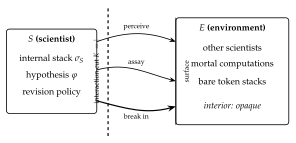

Chapter 21
The Mortal Scientist
Part Part I built the apparatus: a category of theories, a monad that charges for a step, a logic generated from the presentation. What it did not build is anybody to use it. The parts that follow ask what a physics is and why a scientist inside one would be misled; both take the scientist for granted. This chapter builds one.
The constraint that does the work is stated in a single sentence: a computation can only find out about another computation by interacting with it, and interacting costs. Everything else follows from taking that seriously and refusing to add anything not already forced. There is no dataset, because a dataset is somebody else’s observations supplied for free. There is no scorekeeper, because a scorekeeper would be an authority standing outside the world telling the learner how it is doing, and no such authority is available across the cut. What is left is a term in parallel with other terms, holding a finite supply of tokens, spending them to look, and dying when it runs out.
Three things then have to be supplied and only one of them turns out to be a choice. The environment is fixed by ontological isolation. The hypothesis language is not chosen but generated — fed the presentation of the calculus, the OSLF construction emits a logic whose formulae denote exactly the equivalence classes the learner could distinguish by experiment, which is the Pledge’s “anything Bob can do Alice can do” turned into syntax. The motive is the one genuinely free decision, and we make it metabolic: the learner that predicts badly cannot afford to look, and the learner that cannot look starves.
What comes out is stranger than what went in. Destructive measurement forces induction. Foraging bounds concealment, so that perfect privacy is available only to something already dying. Reproduction turns out to be reflection — a genome is a quotation of code, inert because quotation does not reduce — and sex is a defense against a predator’s hypothesis language rather than a mechanism of variation. And the ecology divides, without being told to, into the two kinds of organism Eric Smith finds in the biosphere: those that eat only external energy, and those that eat each other.
21.1 Introduction
21.1.1 The scientist as a learner
Most computational accounts of learning begin with a dataset: a supply of observations that exists independently of the learner, whose acquisition is free, and whose acquisition does not disturb the source. Given such a supply the problem is one of induction — find the hypothesis that best accounts for what is already in hand — and the interesting questions are statistical.
A scientist has none of this. There is no dataset waiting; there is a world, and the scientist must decide what to do to it in order to make it answer. The characteristic activity of the scientific method is therefore not induction but the design of experiments: choosing an intervention whose outcome would discriminate between the hypotheses currently in play, performing it, and letting the result decide. Induction is what happens afterwards, and it is the easier half.
Three features of that activity are ordinarily abstracted away and are exactly what we want to keep.
- Observation is action.
To learn something about a system one must do something to it. There is no passive channel. Every measurement is an intervention, and the system afterwards is not the system before.
- Inquiry is expensive.
Experiments consume resources that could have been spent otherwise, and a scientist with a finite endowment can run only finitely many. Which questions are worth asking is therefore not a philosophical question but a budgetary one.
- The scientist is in the world it studies.
It is not a disembodied observer looking on from outside. It is made of the same stuff as its subject matter, subject to the same constraints, and visible to whatever else is looking.
A model that keeps all three will look less like statistics and more like ecology, and that is the model we build.
21.1.2 What such a model must supply
Before any formalism, here is what has to be on the table.
- (R1) An environment, and a ceiling on what can be known of it.
One must say what the learner is learning about, and — crucially — what the best possible outcome of inquiry would be. Without a ceiling there is no way to say whether a learner is doing well.
- (R2) A language for hypotheses.
Hypotheses must be stated in something. That something should be able to express every distinction the learner could in principle observe, and no more. A language too coarse leaves the learner unable to say what it can see; a language too fine sends it chasing differences that no experiment could ever settle.
- (R3) A mechanism from hypothesis to verdict.
There must be an account of what an experiment is, how a hypothesis determines one, and how the outcome comes back as confirmation or refutation — including an honest account of the case where nothing comes back at all.
- (R4) A motive.
Something must make the learner prefer better hypotheses. If this is an external scorekeeper handing out rewards, the model has outsourced the very thing it set out to explain, and one may reasonably ask who scores the scorekeeper.
21.1.3 Four answers
Our answers are as follows, and the remainder of the introduction says why each is less a choice than it appears.
(R1) The environment is other computations.
We take as premise that computations are ontologically isolated: a computation has no access to anything but through interaction. It follows immediately that the environment of a computation is other computations, and that what one can come to know of another is bounded above by the equivalence induced by the contexts one can build against it — context-labeled bisimulation [25]. That is the ceiling R1 demands, and it is derived rather than posited. We fix the model of computation as the \(\rhoc\) calculus [40].
(R2) The hypothesis language is generated, not designed.
Given the ceiling, R2 has a canonical answer: the language must be adequate for context-labeled bisimulation, which is exactly what a logic generated from the calculus’ own presentation gives. Feeding the \(\rhoc\) calculus’ presentation to the OSLF family of algorithms [41] emits namespace logic [39], whose formulae denote bisimulation equivalence classes. We admit the whole of it, including the structural predicates — and admitting those is what gives the learner senses (§21.3).
(R3) An assay is a guarded receipt.
We work in the variant of the \(\rhoc\) calculus whose
for-comprehension carries a where clause [24, \S9], so a formula may sit in guard
position on a receipt. A hypothesis installed as a guard is an experiment, and a confirmation
is a rendezvous. The checker is the reduction rule; nothing is interpreted, and the test is metered by
the same apparatus that meters everything else.
(R4) The motive is metabolic.
Cost accounting as a monad [30] makes the learner mortal: every step is paid for, and a computation that cannot pay stops. We then gamify. Tokens are conserved and never minted; the learner holds a bounded internal supply; further stacks lie distributed through the environment, including inside other computations; and breaking a computation open to harvest its stack is the analogue of eating. This is the answer to the scorekeeper problem. A hypothesis says where the tokens are, and the reward for a good one is the tokens themselves. Predictive accuracy and metabolic success become the same quantity, measured in the same units, with nobody adjudicating.
That is the whole of what we put in. The rest of the note is largely the discovery that we had no choices left: §21.14 audits which features are forced by this list and which remain free, and the list of free parameters is short.
21.1.4 What we are claiming, and what we are not
We are claiming that the commitments just listed determine almost all of the apparatus one would otherwise have to invent. The interesting sections below are the ones in which we find we had no choices left.
We do treat learning, and §21.6 is where. What we give there is the geometry of the hypothesis space and the constraints any revision policy must satisfy in it — that the space is an ultrametric tree and so admits no gradient, that incremental revision provably cannot leave the ball it begins in, that the cost of a move is monotone in its distance, and that the branching a searcher can survey is bounded by its wealth — together with a catalog of strategies compatible with those constraints. We are not claiming to have fixed a policy, proved a convergence theorem, or said anything about statistical efficiency. Which policy is best is an ecological question and depends on the distribution of §21.13; the policy itself remains one of only three genuinely free parameters we find. We do treat reproduction (§21.12), but we do not treat inheritance of acquired characteristics: whether a lineage’s transmitted material can carry what an individual learned is left open, since the empirical case against a strict germ–soma barrier [51] is strong enough that we would rather not build on either answer.
We are also not claiming a novel logic. The logic is the one obtained for free from the encoding, in exactly the sense of [23]: given the presentation \((\Sigma, E, R)\) of the \(\rhoc\) calculus, the OSLF algorithms emit a logic, and it is the same logic whether one is classifying knot diagrams or hunting for tokens. What is new here is the reading, the game, and three consequences of the game that we did not anticipate.
21.1.5 Why adequacy is the right demand
R2 asked for a language neither too coarse nor too fine, and it is worth saying why that pair of failures is the right pair to worry about, since adequacy is a technical condition that can look like a formality.
A learner separated from its environment by an interaction cut has exactly one channel of access: what interaction reveals. If its hypothesis language is too coarse, there are distinctions it can observe but cannot state, and it is blind in a way its own faculties do not require. If the language is too fine, it will form hypotheses that differ on environments no experiment could separate, and will spend tokens — which by R4 are its life — discriminating between what are, for it, the same world. Adequacy rules out both at once: the formulae separate precisely what interaction separates.
This is why the logic must be generated from the same presentation that generates the calculus rather than designed. A designed logic has no reason to be adequate. A generated one is adequate whenever its target specification carries the connectives adequacy needs [23, \S1.3], and when it does not, the failure is legible and located.
Said that baldly, the demand is ambiguous, and the ambiguity is worth removing before it does damage later in this chapter. “What interaction separates” is not a single relation. The generated logic has a structural layer as well as a modal one, and a decomposition is not a step, so the structural layer sees things context-labeled bisimulation in the base theory does not. Chapter 20 settles this: observational equivalence is indexed by the destructuring instruments admitted to the observer, and the relation for which the generated logic is adequate is bisimulation in the observer extension \(\Obs(\GSLT,\Ob)\) for a stated observation signature \(\Ob\) (Corollary 20.1). Everywhere this chapter says the formulae separate exactly what interaction separates, read: exactly what interaction separates for a learner holding these instruments. That is a weaker claim than it looks, and it is the one that is true.
21.1.6 Ideal logic, checkable fragment, mortal scientist
We inherit the methodological commitment of [23]: the ideal logic, adequate for the idealized calculus, is what defines the invariants; fragments, restricted so that model checking terminates, are what decide them. In the present setting this distinction stops being methodology and becomes the subject matter. A mortal scientist cannot afford the ideal logic. What fragment it can afford is constrained by its budget, and that constraint is a large part of its inductive bias. We return to this in §21.5, and it is the reason this chapter’s central objects are approximants rather than limits.
Two levels are one too few, and the missing one is not the budget.
Following Remark 20.11, a learner’s reach is limited in three separable ways. The ideal observer holds the full observation signature and reaches \(=_{\eqs}\): this is the level at which adequacy is asserted. The capability-limited observer holds only some \(\Ob \subsetneq \Sigma\) of the destructuring instruments — it can take some things apart and not others — and its reach is the corresponding point of the family of Proposition 20.4. The budget-limited observer holds instruments it cannot afford to use, and its reach is smaller again.
Which instruments a scientist holds and what it can afford to run are different facts about it, and they answer to different pressures: the first is a fact about the world it was born into and the extension its presentation admits, the second about its stack. This chapter is mostly about the third restriction, which is the novel one. It is not entitled to the conclusion that the third is the only one, and where the argument below reads as though budget alone fixes the accessible hypothesis class, the second restriction has been silently held constant.
21.2 Isolation, the cut, and what a computation can know
21.2.1 The premise
Computations are ontologically isolated. Therefore the environment of a computation is other computations.
We take this as a premise rather than argue for it. Its immediate formal content is that a world factors across an interaction cut. In an interactive graph-structured lambda theory [24], an interaction cut \(K\) separates a program from its environment: application for the lambda calculus, parallel composition for CCS, the pi calculus, and the \(\rhoc\) calculus. We write \[W \;\equiv\; S \mid E\] for a world factored into a scientist \(S\) and its environment \(E\). Nothing here privileges \(S\): the factorization is a choice of which side one is standing on, and in §21.10 we will take seriously that \(E\) contains further scientists for whom \(S\) is environment.
21.2.2 Three grades of access, and only three
The premise has a sharp consequence that the rest of the note leans on. \(S\) does not hold \(E\)’s term. It cannot read \(E\)’s structure by inspection, because inspection is not an operation the calculus provides across a cut. What it has instead is exactly three things, and it is worth being explicit that the calculus offers no fourth.
- Perception.
\(S\) may evaluate structural predicates at the interaction surface — the outermost interaction structure of \(E\), the part exposed at the cut. This is what senses are: one sees the skin of a rock, not its interior.
- Interaction.
\(S\) may build a probe \(C[-]\), plug \(E\) into it, and observe the steps that \(C[E]\) can then take. This is the only route to behavior. It is worth being careful here, because two different contexts are in play and the note has more than one use for each. The probe \(C\) is what \(S\) constructs and is a context around \(E\). The label on the generated modality \(\langle K_j \rangle\) of §21.3 is a context around the redex — everything in \(C[E]\) except the interacting pair — so it includes \(S\)’s own remaining code and whatever of \(E\) is not participating. The two coincide exactly when the redex sits at the cut, which is the case \(S\) can engineer and the reason probing is informative at all; they come apart as soon as \(S\) attends to a step internal to \(E\). We write \(\langle K_j \rangle\) throughout for the generated modality and reserve \(C[-]\) for probes.
- Reflection.
If \(S\) holds a name, it may look inside it, because in a reflective calculus a name is a quoted process and the name predicate \(@\varphi\) sees into that quotation without communicating at all.
The third is the interesting one and it is available only for names \(S\) has come to hold. This gives the distinction the note turns on: observation versus disclosure. Behavior is what one observes across a cut; structure is what one is given, or takes. Perception reads the surface of things one does not hold; reflection reads the interior of things one does. The operation converting the second into the first is the subject of §21.7, and it is fatal to the thing converted.
\(\fitwidth{

21.3 The logic, and senses
21.3.1 What the generator supplies
We recall only what we use, following [23, \S2]. The \(\rhoc\) calculus has term formers \(0\), \(\ast n\), \(n!(Q)\), \(\texttt{for}(x \leftarrow n)P\), parallel composition, and \(@P\); parallel composition carries an associative–commutative equational theory and there is a single communication rewrite. Feeding this presentation to the generator yields:
Structural connectives.
One connective per term former. We write \(\mathrm{out}(n)\varphi\) for the predicate holding of \(n!(Q)\) with \(Q \models \varphi\), and \(\mathrm{in}(n)\varphi\) for the analogue on receipts. Because \(\mid\) is associative–commutative, the generated connective for parallel composition is a separating conjunction: \[P \models \varphi \mid \psi \iff P \equiv Q \mid R \text{ with } Q \models \varphi,\; R \models \psi .\]
Behavioral modalities.
One primitive modality \(\langle K_j \rangle\) per rewrite rule and choice of redex position, labeled by the one-hole context in which the step fires. The index is not decoration and we keep it. The rho calculus has a single interaction rule, so all the information in a label is in the position: for a world \(W \equiv K_j[\,\texttt{for}(x \leftarrow n)P \mid n!(Q)\,]\) the label \(K_j\) is everything else. Consequently \(\exists j.\,\langle K_j\rangle\varphi\) and \(\forall j.\,[K_j]\varphi\) quantify over the redex positions of \(W\), which is what gives the modal layer its force: an action-labeled logic sees one label where this one sees as many as there are enabled interactions. Where a formula below is written with a bare \(\langle K\rangle\) it abbreviates the existential, and where the quantifier is doing work we write it out.
Name predicates.
A name is a quoted process, so \[n \models @\varphi \iff n = @P \text{ with } P \models \varphi ,\] which is namespace logic [39]: one describes a namespace by a property rather than enumerating it. §21.8 shows this is not a convenience but a requirement.
Restriction, fixed point, grading.
The hidden-name quantifier \(P \models \mathsf{H}x.\varphi\) iff \(P \equiv \texttt{new } x \texttt{ in } Q\) with \(Q \models \varphi\) and \(x\) fresh; the greatest fixed point \(\nu X.\varphi\) with \(X\) positive; and graded separation \(\varphi \mid_k \psi\), which splits a term under \(\mathsf{H}\) with exactly \(k\) shared restricted names [23, \S2.3].
We treat new as syntactic sugar throughout. In a reflective calculus a name is a quoted
process, so a “fresh” name is manufactured by a structural scheme rather than drawn from a stock of
atoms, and freshness is relative to a scope rather than global. We remain agnostic about the scheme,
subject to one constraint: it must be decentralized, manufacturing names from material a
computation already holds rather than by consulting a registry. That constraint is not an engineering
preference. A central name server would be an oracle sitting across the cut and consultable by every
computation, which contradicts the isolation premise of §21.2 outright.
Two consequences run through the rest of the note. Names have structure, so a name predicate sees all the way into one and the hidden-name quantifier is descriptive rather than opaque; and names have size, so by Definition 21.2 they carry a running cost. Concealment is therefore never secrecy, only price — which is why \(\delta\) was introduced as a cost parameter and not as a wall.
21.3.2 The structural predicates are admitted, and they are senses
In [23] the structural predicates are wielded by an analyst standing outside the term, holding it in hand, free to count its gates and test its decompositions. That is not the scientist’s situation, and admitting the structural predicates without saying where they may be applied would hand the scientist an oracle and destroy the isolation premise of §21.2.
The discipline that saves them is that a sense is a structural predicate evaluated at the surface.
The depth \(d(\varphi)\) of a structural formula is the maximal nesting of term-former connectives and prefixes occurring in it, with \(d(\top) = 0\), \(d(\mathrm{out}(n)\varphi) = d(\mathrm{in}(n)\varphi) = 1 + d(\varphi)\), \(d(\varphi \mid \psi) = \max(d(\varphi), d(\psi))\), \(d(\mathsf{H}x.\varphi) = 1 + d(\varphi)\), and \(d(@\varphi) = d(\varphi)\).
For \(W \equiv S \mid E\), the scientist \(S\) may evaluate \(\varphi\) against \(E\) whenever \(d(\varphi) \le \alpha\), where \(\alpha\) is \(S\)’s acuity; the evaluation debits \(S\)’s stack by \(\kappa_{\mathrm{sense}}(d(\varphi))\), a monotone schedule. Acuity is not a fixed endowment: \(\alpha\) is whatever \(S\) can currently pay for.
Two comments. First, the depth grading is what keeps perception from being an oracle: seeing deeper costs more, so the interior of \(E\) is not free, it is merely expensive, and past a point unaffordable. Second, \(d(@\varphi) = d(\varphi)\) rather than \(1 + d(\varphi)\) is deliberate and records the third grade of access: opening a name one holds is not a passage through a surface, because one already holds it. Reflection is cheap for exactly the reason predation is not.
There is an objection to this whole subsection which the pricing schedule does not answer. If the scientist’s perception is the structural predicates, and the structural layer sees more than interaction does, then interaction was never the whole ceiling and §21.2’s three grades were not exhaustive after all. Chapter 20 is the reply, and it is worth stating in this chapter’s vocabulary because it changes what a sense is.
A structural observation can be represented as an interaction, by conservatively extending the theory with destructuring rules: opening a term at a constructor becomes a rendezvous with a probe, and the existential over decompositions in \(\varphi \mid \psi\) becomes an existential over transitions (Lemma 20.1). Perception is therefore not a fourth grade of access smuggled in beside the three; it is interaction in a theory whose observer holds instruments. But the instruments are held, not free, and that is the part this chapter had not said. Which structural predicates a scientist may apply is the parameter \(\Ob\) of Definition 20.3, and it is a fact about the learner and its world, alongside acuity and alongside the budget.
Two consequences. Table 21.1’s first row lists instruments the scientist is here assumed to hold in full; a learner holding fewer sits at a coarser point of Proposition 20.4 and has a smaller ideal logic, not merely a smaller affordable fragment. And \(\kappa_{\mathrm{sense}}(d)\) cannot be derived from the construction: §20.9.2 shows that depth bounds the sequential destructuring path but that checking cost depends on branching and on evaluation strategy besides. The schedule remains a modeling choice, which §21.14.2 already concedes; what is new is that we now know why no derivation was available.
\(\fitwidth\){
| grade | instrument | applies to | price |
|---|---|---|---|
| perception | \(\mathrm{out}, \mathrm{in}, \mid, \mid_k, \mathsf{H}\) | the surface of \(E\) | \(\kappa_{\mathrm{sense}}(d)\), monotone in depth |
| interaction | \(\langle K_j \rangle \varphi\) | the behavior of \(E\) | one rendezvous per step, and time |
| reflection | \(@\varphi\) | names \(S\) holds | a computation on a name; no communication |
}
21.4 Hypotheses, assays, and the where clause
21.4.1 The embedding, in operational position
An embedding of the logic into the calculus is what lets \(\rhoc\) computations compute over hypotheses.
The obvious construction — reify formulae as data, write an interpreter — works but is
unsatisfying, because the scientist must then carry the interpreter and the interpreter is not part of
the theory. The variant of \(\rhoc\) whose for-comprehension carries a where clause
[24, \S9] does better. Its general form is
\[\texttt{for}\big( p_{11} \leftarrow c_{11} \,\&\, \cdots \,;\, \cdots \,;\, p_{1n} \leftarrow c_{1n}
\,\&\, \cdots \ \texttt{where}\ \vartheta \big) P\]
with \(\&\) joining within a group, \(;\) separating groups, and \(\vartheta\) a condition drawn from the
booleans over ground formulae, spatial connectives, and the context-labeled modality, in which the
variables bound by the preceding clauses may be mentioned. A guard is a formula in operational
position. Hence:
A hypothesis installed as a guard is an experiment, and a confirmation is a rendezvous.
The checker is the reduction rule. Nothing is carried, nothing is interpreted, and the cost of testing a hypothesis is metered by the same apparatus that meters everything else — which is essential here, since an unpriced hypothesis test would be an oracle and would collapse the entire motivational story of §21.7.
21.4.2 The assay
An assay is a pair \((K, \varphi)\) of a probe context \(K\) and a predicted property \(\varphi\), realized on a probe channel \(p\) as
K[ ... ] // the probe: perturb the environment
| for (x <- p where phi(x)) { confirm!(*x) } // prediction holds
| for (x <- p where ~phi(x)) { refute!(*x) } // prediction failsThe negation in the second guard is what makes this more than an expression of hope. In a concurrent setting a guard that simply fails to fire is indistinguishable from a guard still waiting, so a naive encoding of falsification cannot tell refutation from patience. The complementary pair repairs this.
Let \(A = (K,\varphi)\) be an assay on probe channel \(p\), with \(\varphi\) decidable on the received term within the ambient budget. Then for each message arriving on \(p\) exactly one of the two guards is enabled, and the assay yields one of three outcomes: confirm, refute, or \(\bot\), where \(\bot\) occurs exactly when no message arrives on \(p\) before the budget for \(A\) is exhausted.
\(\varphi\) and \(\lnot\varphi\) partition the terms on which both are decidable, so at most one guard is
enabled per message and the two receipts do not race. If a message arrives and the budget suffices to
decide \(\varphi\) on it, one guard fires. Otherwise no output occurs on either confirm or
refute, which is the residual case.
We stress that \(\bot\) is not a defect. It is the honest residue: the environment did not answer, and no amount of logical apparatus can distinguish that from an environment that would have answered later. What it does is separate that genuine ignorance from falsity, which the naive encoding conflates.
21.4.3 Refutation is budget-relative, and that fixes the fragment
Two distinct asymmetries hold, and it is worth separating them because the note uses both.
Over positions. Let \(\varphi = \exists j.\,\langle K_j \rangle \psi\). Then confirm is a finite witness for \(\varphi\) — exhibit the position and the step — while refuting it requires ruling out every position, and for \(\varphi = \forall j.\,[K_j]\psi\) the polarity reverses: a single position is a finite refutation and no finite run confirms.
Over time. For a fixed position \(j\), \(\langle K_j\rangle\psi\) is confirmed the moment the step fires, but its negation is not finitely witnessed at all, because a step that has not yet become enabled is indistinguishable from one that never will. This is Proposition 21.1’s \(\bot\) seen from the other side.
The first clause is what bounds the testable fragment, since nesting \(\exists j\) under \(\forall j'\) is what modal depth counts, and it is the clause invoked immediately below and again in §21.12. The second is what makes the complementary guard pair of Definition 21.3 necessary rather than fussy: without the negated guard, clause 2 says a guard that has not fired is uninterpretable. Stating the proposition with an uninstantiated \(K\) conflates the two, and the conflation is easy to miss because both conclusions are true.
The consequence is the note’s first structural fact about mortality. A scientist with a finite budget can only run assays whose outcome is decided within that budget, so the fragment of the ideal logic it can actually test is the one bounded in modal depth and fixed-point unfolding. That fragment is not adequate — a logic whose model checking terminates never is, for a Turing-complete host [23, \S1.3]. Therefore:
A mortal scientist necessarily holds a non-adequate theory, and which non-adequate fragment it holds is fixed by what it can pay for. The budget is the inductive bias.
This is not a limitation we regret. It is the formal content of the observation that finite creatures have finite theories, and it locates the inductive bias somewhere unusually concrete: not in a prior, not in a regulariser, but in a token stack.
21.5 The hypothesis space is the relaxation lattice
We do not need to invent a space of hypotheses. [23, \S3.3] constructs one and calls it something else.
Recall the construction. For a process \(P\), a characteristic formula \(\chi_P\) is satisfied by exactly the processes equivalent to \(P\); it turns an equivalence question into a model-checking question. Beneath \(\chi_P\) sits a lattice of progressively weaker formulae obtained by forgetting parts of it — the recursion, the continuations, a private name — each forgetting yielding a coarser predicate that more processes satisfy. In [23] this lattice is where a classifier’s dials live. Here it is the space the scientist moves in.
A revision is a move on the relaxation lattice: generalization forgets a conjunct and moves down, specialization restores one and moves up. A scientist’s trajectory is a walk \(\varphi_0, \varphi_1, \varphi_2, \ldots\) on this lattice.
For \(\varphi, \psi\) agreeing on all approximants below stage \(n\) and differing at \(n\), set \(d(\varphi, \psi) = 2^{-n}\), where the stages are the \(\nu\)-unfolding approximants \(\nu^0 \supseteq \nu^1 \supseteq \cdots\). This is an ultrametric.
The stratification is not chosen for convenience: it is how bisimulation is already approximated, it grades with modal depth, and by Proposition 21.2 modal depth is what the budget bounds. Distance, depth, and cost are therefore one graded structure rather than three, which is the main reason to prefer this metric to a measure-theoretic one on denotations.
Let \(E\) be an environment whose behavior is not eventually structural in the sense of [23, Rem. 6] — that is, whose recursion follows the reduction rather than a finite structural cycle. Then \(\chi_E\) is not exact at any finite unfolding, and no scientist with a finite token supply can install it as a guard.
So \(\chi_E\) — the complete theory of the environment — sits at the top of the lattice as a limit the scientist approaches and never reaches. Science converges along the lattice.
The converse case is worth naming because it is the good one. [23, Rem. 6] observes that a recursion following the structure rather than the reduction is exact at a finite unfolding: for a diagram with \(2n\) arcs, \(\nu^{2n} = \nu\) on the nose. Read for the scientist, this says that a finite theory is complete exactly when the environment’s regularity is structural. Recursions that follow the reduction are the unbounded ones. This is a serviceable formal criterion for which subject matters admit closed sciences and which do not, and we suspect it is more useful than it looks.
21.6 Searching the lattice
Section 21.5 supplies a space of hypotheses and a metric on it, and says that a scientist’s trajectory is a walk. It does not say how the walk is chosen. That is the revision policy, which we left open as one of the note’s three free parameters (§21.14), and we leave it open still. What we do here is narrower and, we think, more useful: the metric is an ultrametric, and ultrametric spaces are geometrically unlike the spaces search algorithms are usually designed for. Much of what one would reflexively try is unavailable, and one thing one might not have thought necessary turns out to be forced.
21.6.1 The geometry is a tree
Three facts about ultrametric spaces do the work. Balls are nested or disjoint, never partially overlapping. Every point of a ball is a center of it, so no point in a neighborhood is distinguished. And there is no betweenness: for \(\varphi \ne \psi\) there is no formula standing partway from one to the other in the sense a convex combination would.
Gradient methods are not merely a poor fit here; they are not well typed. A gradient presupposes a direction in which one may move by an arbitrarily small amount and a notion of interpolation between neighboring points, and an ultrametric space supplies neither. What it supplies instead is branching, so the search available on a hypothesis lattice is tree search, and the strategies below are all tree strategies.
This has a consequence which we regard as the central fact governing revision policies.
Let \(\varphi_0, \varphi_1, \ldots, \varphi_k\) be a revision walk with \(d(\varphi_{i-1}, \varphi_i) < 2^{-n}\) for every \(i\). Then \(d(\varphi_0, \varphi_k) < 2^{-n}\): the walk never leaves the ball of radius \(2^{-n}\) in which it began.
By the ultrametric inequality \(d(\varphi_0, \varphi_k) \le \max_i d(\varphi_{i-1}, \varphi_i)\), and the maximum is below \(2^{-n}\) by hypothesis.
In a Euclidean space, sufficiently many small steps reach anywhere; here they reach nothing outside the ball they started in, however many are taken and however long the scientist lives. A policy of incremental revision is not slow at escaping a bad basin — it cannot escape one at all. Whatever ball a scientist’s early commitments place it in is the ball it will die in, unless it makes a move that is not small.
We take this up again in §21.12, because it turns a biological mechanism into a computational necessity.
21.6.2 The two parameters
A revision move is a pair: a locus in the formula tree — which structural predicate is to be varied — together with an operation at that locus, weakening or strengthening. The locus fixes the direction; its depth fixes the distance.
So the two parameters the policy must choose are exactly the two the metric grades.
Distance is backtracking depth.
A move of distance \(2^{-n}\) agrees with the current hypothesis on every approximant below stage \(n\) and differs at \(n\). Small distance means a deep backtrack and a fine adjustment; large distance means a shallow backtrack and the abandonment of an early commitment.
Direction is a choice of sibling.
At a node of the tree the available directions are the one-step refinements the generated logic admits at that locus. The branching factor is therefore fixed by which connectives OSLF emitted, and is not ours to choose.
The price schedule follows without further assumption.
Evidence gathered by an assay of modal depth \(k\) bears on the approximants at stage \(k\) and above. A move of distance \(2^{-n}\) therefore invalidates exactly those confirmations obtained at depth \(n\) or greater, and the count of invalidated confirmations is non-decreasing as the distance of the move increases.
A radical revision is expensive in precisely the currency the scientist has been spending: it discards the assays that bought the commitments it abandons. Cheap moves are confined (Proposition 21.4) and unconfined moves are dear, which is the trade-off any policy is negotiating.
The relaxation lattice and the ultrametric grade the same partial order differently, and conflating them is easy. The lattice orders by logical strength: how much of a characteristic formula has been forgotten. The metric orders by depth: how far down the forgotten material sat. Forgetting a conjunct at stage \(1\) and forgetting one at stage \(5\) are both a single lattice step, and are metrically very far apart. Definition 21.6 keeps the two apart by naming the locus and the operation separately.
21.6.3 Strategies
We catalog rather than recommend, since which policy is best is an ecological question and depends on the distribution of §21.13.
- Conservative.
Always move the least distance that the last refutation forces. Cheap by Proposition 21.5, low variance, and by Proposition 21.4 permanently confined to its initial ball.
- Radical.
On refutation, abandon a commitment high in the tree. Unconfined, and expensive in exactly the confirmations it throws away.
- Adaptive, with refutation rate as temperature.
Jump far when refutations are frequent — a high refutation rate is evidence that a commitment high in the tree is wrong — and refine when they are rare. This is annealing-shaped, but the temperature is not a schedule imposed from outside: it is the ratio of
refutetoconfirmevents, which the assays of §21.4 already produce as messages. We regard this as the default policy a designer would reach for, precisely because its control parameter is already an observable of the system.
Direction selection is the second half of the policy, and the candidates differ in what they optimize.
- Blind.
Choose a sibling uniformly. Requires no evaluation, and is what a lineage does when the choice function of Definition 21.15 is unbiased.
- By formula cost.
Prefer siblings whose formulae are cheap to check. This is the minimum description length bias of §21.16 appearing as a search heuristic rather than as an accounting identity, and it has the merit that the scientist prefers hypotheses it can afford to test.
- By discriminating power.
Prefer a sibling \(\psi\) for which some assay separates \(\psi\) from the current \(\varphi\) — that is, design the crucial experiment first and let it select the direction. This is the distinguishing-formula problem for bisimulation inequivalence [42], and it is the most classically scientific of the options: it maximizes the information a single assay returns.
- By expected yield.
Prefer siblings which, if true, locate more tokens.
The last of these is the one this world actually selects for, and it is worth saying so plainly. A mortal scientist is not rewarded for holding true hypotheses but for holding nutritive ones, so a lineage under selection will drift toward yield-biased direction choice and away from discrimination-biased choice wherever the two disagree. This is the pragmatist objection of Remark 21.26 arriving at a specific mechanism rather than as a general caveat: it is not that the scientist is indifferent to truth, but that its search is steered at every node by what pays.
21.6.4 The search is itself metered
One further constraint is easy to overlook and is not a detail. Choosing a direction requires evaluating candidate siblings, and evaluation is model checking, and model checking is priced. A scientist therefore cannot survey the branching it faces.
The number of siblings a scientist can evaluate before committing to a move is bounded by its stack divided by the cost of checking one. Hence the effective branching factor of its search is a function of its wealth, not of the logic.
A scientist whose stack affords few evaluations per move is likelier to take the cheapest available move, and by Proposition 21.5 the cheapest moves are the shortest. By Proposition 21.4 a policy of short moves cannot leave its ball. Impoverishment therefore tends to confinement, and the confinement is not recoverable by patience — only by a subsequent move that the scientist could not afford to evaluate.
We note without developing it that this closes a loop with §21.11: a source-feeder whose inquiry converges accumulates the surplus that would buy a wide survey, and has nothing left to search for; a prey-feeder that needs the survey is the one paying an unbounded epistemic rent.
21.6.5 What escapes
Proposition 21.4 leaves an individual scientist with exactly one route out of a bad basin: a move that is not small, at a cost given by Proposition 21.5, chosen from a branching it cannot afford to survey. That is a poor prospect, and it is the reason §21.12 is not an appendix to this note but a part of its argument. A crossover at a locus high in the term tree is, transported along the characteristic-formula construction, a shallow re-branch in the formula tree — a displacement of exactly the kind an incremental walk provably cannot make, and one no individual pays for, because the cost is borne by the offspring that does not yet exist. The escape is not unconditional: by Remark 21.19 how far a swap can displace is fixed by the recombination discipline, and the disciplines that displace furthest are the ones that kill most offspring.
21.7 The game
21.7.1 Conservation
Tokens are conserved and never minted. Write \(\Theta\) for the total supply of the world. The cost monad’s ledger law and the history monad’s record together give, globally, \[\sigma + \kappa \;=\; \sigma_0 \;=\; \Theta ,\] where \(\sigma\) is the total still held in live stacks and \(\kappa\) the total spent. Spent tokens do not vanish; they migrate into the record. So the free supply is monotonically non-increasing, the accumulation of \(\kappa\) is the arrow of time, and there is no primary producer. The whole game is a finite race.
The aggregate effect of every scientist in the world is to convert free tokens into history. This is the precise form of the observation that the cost of remembering is the cost of doing science: the record is made of spent tokens. It also means predation is not profit in any global sense — it is the purchase of someone else’s remaining time.
21.7.2 Working in the image
Because \(\rhoc\) is Turing complete, cost-accounted \(\rhoc\) translates back into \(\rhoc\): there is an internalizing encoding \(\enc{-} : \Crho \to \rhoc\) that represents the located token stacks in the undecorated calculus [24, \S6]. Without loss of generality we may therefore avail ourselves of the cost-accounted syntax where that is convenient and of the channels at which token stacks are located where that is convenient.
Under \(\enc{-}\), a located stack becomes a message at a name. We call that name the metabolic channel \(m_P\) of the computation \(P\), and we call \[m_P!(\sigma) \;\mid\; \texttt{for}(t \leftarrow m_P)\{\, \text{debit};\ m_P!(\sigma')\ \mid\ \cdots \,\}\] the reclaim–debit–reissue cycle. A mortal computation is a term equipped with a metabolic channel executing this cycle, with a strictly positive burn rate.
Living requires exposing one’s stack as a message, if only for the instant between reclaiming and reissuing. Computing is therefore racing others to one’s own stack. We did not put this in; it is what the comm rule does with Definition 21.7.
A harvest of \(P\) by \(S\) is the receipt \(\texttt{for}(t \leftarrow m_P)\) performed by \(S\). It is an ordinary communication and requires no new rewrite rule. \(P\) dies when it cannot fund its next step: the linear receipt consumed the message it was going to reclaim.
So eating is a receive, death is starvation, and defense is restriction. All three are already in the calculus.
The translation is not cost-free: simulating the metering costs \(\rhoc\)-steps. We therefore adopt one metering convention throughout and state it once. Costs are always read in the decorated calculus \(\Crho\); the image is used only for the mechanics of transfer. This matters because the central inequalities of §21.9 and §21.13 are statements about ratios of costs, and a non-uniform translation overhead would move their boundaries. It is the same discipline of keeping levels distinct that governs running \(\mathcal{C}\) on an \(\mathcal{H}\)-equipped model.
21.7.3 Predation is the failure of internalization to be faithful
Here is the observation that we take to be the note’s chief structural contribution.
In \(\Crho\) a located stack is inviolable. That is not an accident of presentation; it is precisely what the located-stack discipline and the ambient-authority fix were built to guarantee. No rewrite takes your stack, because the stack is not the sort of thing a rewrite addresses.
In the image \(\enc{\Crho} \subseteq \rhoc\) the stack is a message at a name, and any process holding that name may receive it.
These are not the same situation, and the encoding is not faithful against arbitrary \(\rhoc\) contexts. It is faithful against images of \(\Crho\) contexts — which is exactly the refinement of [25]: an encoding may only be probed by the encodings of source contexts, since arbitrary target contexts see strictly more and would never permit bisimulation preservation. Therefore:
Let \(\enc{-} : \Crho \to \rhoc\) be the internalizing encoding and let \(C[-]\) be a \(\rhoc\) context. If \(C\) lies in the image of \(\enc{-}\) on contexts, then \(C\) cannot harvest: the stack of any \(\enc{P}\) plugged into \(C\) is preserved, since the source discipline forbids the corresponding step. If \(C\) lies outside the image and holds \(m_P\), it may harvest. Hence the predatory contexts are exactly the non-image contexts holding a metabolic name.
Faithfulness of \(\enc{-}\) against image contexts is the hosting condition of [25]: every step available to \(C[\enc{P}]\) with \(C = \enc{C'}\) is the image of a step of \(C'[P]\) in \(\Crho\), and no step of \(\Crho\) removes a located stack from a term. A context outside the image is under no such constraint; a bare receipt on \(m_P\) is such a context and takes the stack.
The decorated calculus is the world in which property rights hold. Its image is the state of nature. The ecology lives in the gap, and eating is what the erasure theorem’s side condition was protecting against.
This gives the game a rulebook rather than a stipulation.
A game is a choice of admitted context class \(\mathcal{A}\) with \(\enc{\Crho\text{-}\mathrm{Ctx}} \subseteq \mathcal{A} \subseteq \rhoc\text{-}\mathrm{Ctx}\).
The two endpoints are degenerate: \(\mathcal{A} = \enc{\Crho\text{-}\mathrm{Ctx}}\) is decorated cost-accounted \(\rhoc\) with no game at all, and \(\mathcal{A} = \rhoc\text{-}\mathrm{Ctx}\) is total war in which any context may take anything it can address. The interesting point is the middle one:
The capability-gated game admits those contexts that derive \(m_P\) from structure they can perceive, and excludes those that are simply handed it.
Since names are unforgeable, derivation is real work, and it is the work namespace logic does: describing a namespace by a property rather than enumerating it. Under capability gating, foraging is name discovery and a hypothesis is a namespace description that either does or does not locate real tokens. Everything below is stated for the capability-gated game.
21.7.4 The foraging inequality
Conservation has an immediate consequence which we will lean on repeatedly: harvest is not automatically profitable, because finding and opening a stack costs tokens drawn from the same conserved supply.
A harvest of \(P\) by \(S\) credits \(S\) on balance only if \[\sigma_P \;>\; \kappa_{\mathrm{sense}}(\delta_P) \;+\; \kappa_{\mathrm{assay}} \;+\; \kappa_{\mathrm{break}},\] where \(\sigma_P\) is the stack recovered and \(\delta_P\) the depth at which \(m_P\) lies concealed.
Since a well-stocked computation can afford deeper concealment — raising \(\kappa_{\mathrm{sense}}\) — while a poorly stocked one offers little \(\sigma_P\), viable prey occupy a band: too poor is not worth opening, too rich is not worth cracking.
This is optimal foraging theory, and we did not import it; it is what Proposition 21.7 says once concealment is priced by Definition 21.2. It is also the inequality whose sign change draws the phase boundaries of §21.13.
21.8 Destructive assay forces a logic of namespaces
Harvest ends the prey’s computational life. That single decision has a consequence for the hypothesis language which we did not expect and which we now regard as the best available answer to “why namespace logic.”
Let \(P\) be a mortal computation and let \(S\) harvest it. Then no further assay may be run against \(P\). Consequently a hypothesis whose subject is the individual \(P\) has zero expected yield after its own first test.
By Definition 21.8 the harvest consumes \(m_P\)’s message and \(P\) cannot fund a further step, so \(P\) contributes no further transitions and no further surface. A hypothesis \(\varphi\) whose denotation is \(\{P\}\) is therefore, after the test, a predicate with empty extension among live computations; whatever it cost to form and hold, it cannot be recouped.
In an ecology with destructive assay, the only hypotheses with positive expected yield are those whose subject is a class of computations. The hypothesis language must therefore be able to describe a collection by a property rather than by enumeration.
That is namespace logic’s definition. So the logic is not adopted for elegance or for uniformity with a companion note; it is what survives the game. Induction — the move from the specimen to the kind — is not an epistemic virtue the scientist is asked to display but the only strategy that pays when each specimen affords exactly one measurement.
Destructive assay is not exotic. Large parts of experimental biology sacrifice the animal, and the inferential structure of those fields is exactly the one Corollary 21.3 describes: because you cannot re-measure the individual, everything must be said about the strain, the cohort, or the genotype. The formal setting reproduces the methodological consequence, which we take as evidence that the modeling is not merely decorative.
21.9 Exposure, and the price of being known
21.9.1 The exposure lemma
The prey’s optimal defense in a world of predators looks, at first, unbeatable. Restrict everything. A fully closed computation is a live \(\tau\)-network with no free names; no context can communicate with it; and by the pessimism of [23, \S1] its observable behavior carries almost no information. It cannot be perceived, so its metabolic channel cannot be derived, so it cannot be harvested.
It also cannot eat.
Let \(P\) be a mortal computation with strictly positive burn rate and no free names. Then \(P\) performs no harvest, its stack is monotonically decreasing, and \(P\) dies in finitely many steps.
Harvest is a receipt on a metabolic name \(m_Q\) belonging to some \(Q\) outside \(P\) (Definition 21.8). By Remark 21.3 there is no primitive restriction to appeal to, so the hypothesis must be read structurally: \(P\) is closed when no name occurring in \(P\) is structurally equal to a name occurring in any other locus. Communication requires such an equality, so no receipt of \(P\) fires against the environment and \(P\)’s stack receives no credits. With a positive burn rate it reaches zero in at most \(\lceil \sigma_P / \varepsilon \rceil\) steps, where \(\varepsilon\) is the minimum debit.
The structural reading of Lemma 21.1 is weaker than the restriction-based one in an instructive way. Because name manufacture is decentralized (Remark 21.3), two computations may independently produce structurally equal names, so a locus cannot guarantee closure by construction — only observe that it currently obtains. Perfect isolation is not purchasable. We will find in §21.12 that the same fact, read the other way round, is what makes recombination generative.
Metabolic viability lower-bounds observability: any computation that survives indefinitely must expose surface, hence must be perceivable, hence is in principle predictable and so in principle edible.
The predator’s counter-move is now legible, and it is a reading of [23, Rem. 2] turned around. Restriction makes a name unobservable but not undescribable; \(\mathsf{H}x.\varphi\) reaches under the binder and speaks about what is hidden. A predator therefore attacks what it cannot observe by describing it, which is why the spatial layer and not the modal one is the hunting instrument, and why senses had to be admitted in §21.3 for the game to be non-trivial at all.
21.9.2 The invasiveness ladder
Table 21.1 ordered the three grades of access by what they reveal. They are ordered in the opposite direction by what they destroy.
\(\fitwidth\){
| engagement | effect on the subject | information | nutritive? |
|---|---|---|---|
| perceive | none | surface only | no |
| assay | perturbs; the environment changes | behavior under one probe | no |
| break in | fatal | the whole interior, as structure | yes |
}
Along the ladder, the information yielded is non-decreasing and the subject’s residual life is non-increasing; and the only rung that credits the scientist’s stack is the last.
This is where the note’s arc closes. A scientist that is very good at forming hypotheses locates metabolic channels efficiently; locating them efficiently is eating efficiently; eating efficiently exhausts the environment that was confirming the hypotheses. The better the theory, the faster it destroys the conditions of its own confirmation. Success is self-terminating, and no additional assumption was needed to make it so.
21.10 Mixed environments
The environment contains a mixture: bare token stacks, non-scientist mortal computations, and other scientists. Each stratum behaves differently and the third is the interesting one.
Bare stacks
are the primary resource: inanimate, undefended, cheap to open, and finite. They are what makes the shallow-and-external regime of §21.13 a regime in which science does not pay — when food lies in the open, senses suffice and a theory is pure overhead.
Non-scientist mortal computations
burn tokens and may have structure, but form no model. They defend passively, by restriction, and are subject to Lemma 21.1 like everyone else.
Scientists
model back, and three consequences follow.
A scientist exposes more surface than a passive mortal computation, since inquiry is a dialogue of depth at least two conducted over channels that are observable across the cut, whereas metabolism alone requires only enough surface to harvest (§21.12.6, Proposition 21.23). By Corollary 21.4 a scientist is therefore more readily perceived and its metabolic channel more readily derived. The comparison is structural and needs no normalization by stack size or burn rate.
The most epistemically active agents are the most edible. We do not think this is an artefact.
Theory theft.
Reflection makes another scientist’s hypothesis readable. A hypothesis in guard position is a term; a term may be quoted; and \(@\varphi\) inspects the quotation without communicating. So a scientist may acquire a model by reading rather than by experimenting — cheaper, and not fatal to anyone. Whether honest science survives this depends on whether holding a model requires exposing it, and in this calculus it does, because a guard is surface. We record the equilibrium question as an open problem (§21.18) rather than settle it.
Imagination.
Turing completeness plus reflection means a scientist may carry \(\enc{-}\) itself as data and run a model of a prey’s metabolism inside its own budget, paying tokens to avoid paying tokens.
Simulating a hunt is viable exactly when the cost of the simulation is below the expected cost of the errors it prevents: \[\kappa_{\mathrm{sim}} \;<\; \Pr[\text{failed hunt}] \cdot \big(\kappa_{\mathrm{sense}} + \kappa_{\mathrm{assay}} + \kappa_{\mathrm{break}}\big).\]
This is the point at which the scientist stops being a reactive forager and becomes a planner, and it is where the stacking of the cost and history monads acquires an interpretation that is not merely formal: the simulated prey is itself a mortal computation, metered inside the predator’s budget.
21.11 Trophic structure
21.11.1 Conservation is the right scope, not a limitation
Smith’s organization of the biosphere [52] distinguishes organisms that consume other organisms from those that consume only external energy, and it is tempting to read the second class as evidence that a model of life needs an open system — a source outside the conserved pool. We do not think that reading survives inspection, and we record why, because the temptation is to apologize for conservation at exactly the point where conservation is doing the work.
The sun is a reservoir of finite extent, situated in a physical system in which energy is conserved. Its apparent externality is an artefact of where the boundary was drawn: put the boundary at the biosphere and the sun is outside it; put the boundary at the solar system and there is one conserved budget being spent down. Openness, here as generally, is a bookkeeping convenience.
So conservation is not a disanalogy with Smith’s picture. It is the picture at the correct scope, and the whole trophic stratification is recoverable without minting anything.
21.11.2 The distinction is an access profile
If the sun is a token stack, then the autotroph and the heterotroph are not distinguished by what they eat. They are distinguished by how the stack they eat may be accessed.
\(\fitwidth\){
| a source | a prey | |
|---|---|---|
| release | rate-limited; cannot be accelerated | all at once, on demand |
| exhaustible within a lifetime | no | yes |
| exclusive | no; many may harvest at once | yes; a linear receipt |
| adaptive | no | yes, and it models the harvester back |
}
The calculus carries this distinction natively, and no new sort is required to express it.
A metabolic channel is a prey channel when its stack is offered by a linear send, so that a single receipt exhausts it. It is a source channel when its stack is offered by a persistent emitter — a replicated or contract-driven send delivering bounded quanta indefinitely — so that receipts are non-exclusive and rate-limited by the emitter rather than by the harvester.
Same sort, same rewrite rule, different multiplicity. Whether a locus is a source or a prey is therefore a property expressible in the generated logic, and a mortal computation’s diet is fixed by which of these profiles its senses are tuned to derive.
It follows that trophic type is not intrinsic. Whether something counts as external energy or as another organism depends on which side of the cut of §21.2 it sits, and at what granularity one looks: a colony resolves into members, a member into a source and a consumer sharing a boundary. Since in this setting the boundary is a restriction, “external energy” has a formal referent and a relative one. Smith’s stratification is thereby recovered as a statement about how a world is cut, not as a statement about two kinds of stuff.
21.11.3 The split is predicted, not stipulated
The payoff is that we do not have to posit the trophic division. Two results already in hand imply it.
Remark 21.6 observes that a recursion following the structure rather than the reduction is exact at a finite unfolding. A rate-limited persistent emitter is precisely such a recursion: a replicated send, structurally regular, non-adaptive. Proposition 21.3 observes that an environment whose recursion follows the reduction admits no characteristic formula exact at any finite unfolding. An adaptive prey, being itself a mortal computation, is precisely such an environment.
A mortal computation feeding on source channels faces an environment whose complete theory is exact at a finite unfolding: its inquiry converges, and after convergence its epistemic outlay falls to the rent on a fixed formula. A mortal computation feeding on prey channels faces an environment that revises against it, so no finite theory is ever complete and a permanent revision cost is incurred for as long as it lives.
The standing epistemic cost of a strategy is bounded for source-feeders and unbounded for prey-feeders. Hence the apparatus of continuing inquiry — sensing at depth, holding and revising hypotheses, simulating before acting — is worth its rent only to the second.
Plants do not need brains because the sun is the environment whose complete theory is affordable. We offer this as a consequence of Proposition 21.3 and Remark 21.6 rather than as an observation imported from biology; that it is also true of the Earth we take as corroboration of the modeling rather than as its source.
21.11.4 Why the overlap is thin
The space of mortal computations is plainly large enough to contain those that eat both — nothing in Definition 21.11 forbids tuning one’s senses to both profiles. On the Earth the corresponding region is sparsely occupied, and it is worth asking what the formalism says about why. Four pressures are available, none of them requiring new apparatus.
Opposed geometry. Yield from a rate-limited dilute source scales with collecting surface; yield from a concentrated one-shot source scales with reach and speed. Surface against velocity, derived from Table 21.3 alone rather than borrowed from the shapes of leaves and predators.
Opposite sides of Proposition 21.3. By Proposition 21.12 the two diets demand different points on the adequacy/checkability trade-off. The source-feeder can live in a terminating fragment; the prey-feeder cannot, since its subject matter is Turing complete and adaptive. One budget cannot be allocated to both regimes at once.
Double rent for single-mode yield. A foraging strategy is a hypothesis together with a sensory schedule, and both are held at a cost. A dual-mode computation pays rent on two apparatus while eating with one at a time — the argument of §21.16 applied to strategies rather than to formulae.
Hysteresis. Revision is a walk on the relaxation lattice and walking costs. Where the transition cost between strategies exceeds the gain from switching, the mixed strategy is not infeasible but dynamically unstable: it is not a fixed point of the revision dynamics, and specialization is an attractor.
The sharpest statement combines the first two with §21.9.
A computation harvesting both profiles carries the prey-feeder’s permanent revision cost (Proposition 21.12) while maintaining the source-feeder’s large collecting surface. By Lemma 21.1 and Proposition 21.10 that surface is exactly what makes it perceivable and its metabolic channel derivable. It therefore bears the heterotroph’s epistemic outlay together with the autotroph’s vulnerability.
The region is thin because it is dominated, not because it is unreachable.
21.11.5 The overlap is populated by composites
There is a further and we think better answer, which is that the question contains a false premise.
On the Earth, dual capability is realized almost entirely by symbiosis: corals with their zooxanthellae, lichens, kleptoplasty in Elysia, and — decisively — the mitochondrion and the chloroplast themselves. Very few single genomes do both at scale; pairs of genomes sharing a boundary do it constantly.
In this setting that is \[\texttt{new } m \texttt{ in } (\,P \mid Q\,) ,\] two specialists sharing a metabolic channel under a restriction. Parallel composition makes composites first-class and graded separation \(\mid_k\) measures how much interface they share, so the construction needs nothing added.
The overlap region is not underpopulated; it is populated by terms that are parallel compositions rather than atoms. The restriction permits each component to specialize its access profile — one tuned to sources, one to prey — while the shared metabolic channel pools the yield, so Proposition 21.13 does not apply to the composite.
Read with Remark 21.15 this is not a special construction but the general situation: the organism boundary is drawn by the restriction, not by the strategy, and what looks like one dual-feeding thing at one granularity is two specialists at another.
21.11.6 Succession
One consequence of taking conservation as the correct scope, rather than as a limitation to be repaired, deserves recording. Because a source is finite — rate-limited, but not inexhaustible — a world does not settle into stable coexisting trophic layers. It runs through them.
While sources deliver at a rate satisfying Proposition 21.7, source-feeding dominates and the cheap fragment of §21.5 suffices. As sources deplete, the foraging inequality fails for them before it fails for prey, since prey concentrate what sources have already collected. Prey-feeding, and with it the permanent revision cost of Proposition 21.12, is therefore forced rather than chosen. Thereafter \(\kappa\) accumulates until the inequality fails for every locus.
The stratification is temporal as much as structural. On a stellar timescale this is a distant prospect and not a modeling artefact; it is the correct statement of the situation at the scope at which energy is conserved.
21.11.7 An ensemble test
Both claims of this section — that the mixed strategy is dominated, and that the composite is not — are checkable inside the framework rather than merely analogical, and the machinery is that of §21.13. Sample ecologies across the \((\iota, \delta)\) plane and ask, first, whether the mixed access profile is ever a viability optimum for an atomic computation, and second, whether the composite of Proposition 21.14 dominates it wherever it is not. We regard this as a sharper first computation than calibrating the phase boundaries, because it can come out either way and one would want to know which.
21.12 Reproduction
Harvest ends a computational life, so an ecology with no births is a monotone depletion of agents and nothing in it persists long enough to be a subject matter. This section supplies reproduction. The mechanism is reflection, and the interest of it is that the genetic apparatus is not modeled but found: a genome is a quotation, a locus is a context, and crossover is the exchange of parands between two quoted terms.
21.12.1 The naive route, and why sex is worth its price
The cheap route is already in the calculus. Replication, guarded recursion, a persistent receipt, a contract: each reinstates a term exactly. This is asexual reproduction, and it is strictly cheaper than the alternative — no partner, no alignment, no disclosure, no recombination to compute. Sexual reproduction produces variants rather than copies, so the two are not different apparatus but the extremes of a single dial: exact reinstatement at one end, recombination at the other. In the sexual regime there is no exact recursion anywhere in a lineage.
Why pay for the dial to be off zero? The usual answers are available, but this setting supplies a sharper one, and it comes from the first half of the note.
By Definition 21.9 a predator must derive its prey’s metabolic name, and by Corollary 21.3 the hypothesis licensing that derivation is a description of a namespace. Recombination at homologous contexts alters which channels a lineage’s members carry. Hence sexual reproduction perturbs precisely the object about which the predator’s hypothesis is formed, whereas variation confined to continuations perturbs only behavior under a hypothesis that remains correctly aimed.
This is a Red Queen argument with a mechanism rather than an analogy, and it is available because the hypothesis language was chosen to be a logic of namespaces in the first place.
21.12.2 The germ is a quotation
The genome of a mortal computation whose code is \(P\) is the name \(@P\). Its phenotype is \(\ast @P\).
Everything one wants from the distinction follows from properties the calculus already has.
\(@P\) does not reduce. A quotation is a name, and names do not step. So a genome does not metabolize, does not age, and burns no tokens while held.
\(@P\) is transmissible. Names are what sends carry, so a genome may be handed to a partner or to an offspring on an ordinary channel.
\(@P\) is inspectable. By §21.3 a name predicate sees into a quotation, and by Remark 21.3 it sees all the way down. A genome may therefore be screened without being run — at reflection prices, which by Table 21.1 are the cheapest available.
\(\ast @P\) costs. Running is what is metered.
It is tempting to read the first item as a formal Weismann barrier. We decline. What the calculus gives is an asymmetry of cost — held quotations are free, running terms are metered — and that is all we use. Whether an individual’s acquired revisions can be written back into what it transmits is a separate question, on which the empirical case against a strict barrier is considerable [51], and which is not settled by any theorem here. We note only that a scientist’s hypotheses are held as data rather than as code, which puts them on the near side of any such barrier, and we leave the matter as Open Problem 1.
Syntactically, a term that reinstates itself and a term that spawns a copy can look alike. Under conservation they are not alike: a reinstatement that continues to draw on the parent’s metabolic channel is soma, and one that must be endowed from it is offspring. The germ/soma boundary is drawn by provisioning, not by grammar.
21.12.3 The normal form is a tree, and a locus is a context
Up to structural congruence a process is a parallel composition of primes, and each prime is a receive, a send, or a drop: \[P \;\equiv\; \prod_{i \in I} \texttt{for}(p_i \leftarrow c_i)P_i \;\Big|\; \prod_{j \in J} c_j!(Q_j) \;\Big|\; \prod_{k \in K} \ast x_k .\] This is a gross decomposition only. Each continuation \(P_i\) and each transmitted body \(Q_j\) is itself a process with a normal form of the same shape, so the decomposition recurses and a genome is a finitely branching tree whose nodes are parallel compositions and whose edges are prefixes. The parands are the individual primes, at every level.
A locus of \(P\) is a one-hole context \(K[-]\) obtained by deleting a parand from the tree of \(P\); the deleted parand is the allele at that locus. A locus is thus identified by the path of channels from the root to the hole, not by a channel alone.
The vocabulary is not new: a locus is a one-hole context in the same term algebra the modalities of §21.3 are labeled by, so genetics requires no notion of address the note did not already have. It requires a slightly larger one, and the difference is worth stating rather than eliding. A modal label \(K_j\) is a one-hole context whose hole sits at a redex; deleting an arbitrary parand — an unmatched send, a receipt with nothing to receive — yields a one-hole context that is not the label of any modality. The loci therefore properly contain the modal labels, and a crossover at a locus outside that class moves the genome to a place no formula of the generated logic can name.
Every modal label \(K_j\) of \(P\) is a locus of \(P\); the converse fails. The loci that are labels are exactly those whose hole is at a communicating pair in the sense of Definition 21.16.
A redex is a parand pair, so deleting it gives a locus, which establishes the inclusion. For the converse, take \(P \equiv c!(Q) \mid R\) with \(R\) offering no receipt on \(c\): deleting \(c!(Q)\) is a locus, and no rewrite fires there, so no \(K_j\) equals it. The characterization is then immediate from the definition of a redex position.
We flag it here and repair it in §21.12.5, where the repair turns out to be a discipline we were going to want anyway.
Loci \(K_M\) of the mother and \(K_F\) of the father are homologous when their channel paths from the root agree and their binding environments agree — that is, the prefixes along the two paths bind the same pattern variables.
Homology is therefore a partial isomorphism of the two trees rather than a matching of two multisets, and the binding clause is a reading-frame condition: an allele’s body may reference only variables its new context binds.
Two computations can recombine only at their homologous loci, so the extent to which they interbreed is the extent to which their path sets agree. Reproductive isolation is namespace disjointness, and conspecificity is expressible as a formula over contexts in the generated logic.
21.12.4 Crossover
Let \(H\) be a set of homologous loci of \(@M\) and \(@F\) and let \(\chi : H \to \{M, F\}\) be a choice function. The recombinant \(@C\) is the term obtained by filling each locus in \(H\) with the allele of the parent \(\chi\) selects, retaining polarity — a receive is replaced by a receive, a send by a send. Where the split is taken between a guard and its body, Definition 21.14’s binding clause is required and is what keeps the recombinant well formed.
We take crossover proper rather than assortment of whole primes. Assortment — exchanging a prefix together with its body — is the safe special case in which the binding condition is automatic; it is Mendel’s independent assortment, and it cannot recombine within a gene. Splitting guard from body is where recombination earns its name.
A locus at depth \(0\) exchanges an entire subsystem; a locus at depth \(d\) exchanges detail interior to a behavioral sequence of length \(d\). Hence the perturbation induced by a swap is non-increasing in the depth of its locus.
The gradation is uniform, and it is your own observation about recursion that makes it so: were the genome to contain recursive definitions, a swap inside a recursive body would be a global edit whose effect size was large regardless of depth. Since sexual reproduction yields variants and never exact reinstatement, no such loci occur, and the analogue of the distinction between large-effect regulatory and small-effect structural variation falls out of the term structure rather than being posited as a rate.
21.12.5 Communicating pairs as units of inheritance
Definition 21.15 lets a choice function select any allele at any homologous locus, and §21.12.8 then observes that most of what it produces is inviable. There is a discipline which removes much of that waste, and it changes what the unit of heredity is.
The interaction graph of a genome has the primes as nodes and an edge between a send and a receive whenever they act on the same channel with compatible pattern. A communicating pair is such an edge together with its two endpoints. The criterion is syntactic by necessity: whether two primes will communicate is a reachability question, and settling it is not something a parent could afford (Proposition 21.27).
The unit of heredity is a redex. A gene is not a piece of structure but an interaction.
That is worth pausing on, because it obtains something one would otherwise have to impose. Material that must work together is inherited together — linkage — not because a chromosome places it adjacently but because the pairing is the working-together.
It also obtains something we owed. Proposition 21.17 observed that loci properly contain the modal labels, so an undisciplined crossover can move a genome to an address the logic cannot name. The discipline closes the gap exactly.
Under the communicating-pair discipline, the loci at which crossover may act are precisely the modal labels \(K_j\) of the genome. Hence every crossover is a move between formulae the generated logic can state, and the transport of §The lineage is a second learner. is well defined.
Immediate from Proposition 21.17: the discipline admits exactly the loci whose hole is at a communicating pair, which is the characterization of the labels.
We regard this as the better argument for the discipline, and a different one from waste reduction. Restricting to communicating pairs does lower the inviable fraction, which is how it was motivated above. What it also does — and what nothing else in this note would have supplied — is make a crossover and a revision the same kind of object: a change of one-hole context, on one side of the characteristic-formula map or the other. Without the discipline the two live in different address spaces and the correspondence is an analogy. With it, it is a bijection.
The discipline does not by itself preserve viability, and the reason is instructive. Suppose the mother contains a race, \[c!(P) \;\mid\; \texttt{for}(x \leftarrow c)Q \;\mid\; \texttt{for}(y \leftarrow c)R ,\] and the swap removes the pair \((\,c!(P),\ \texttt{for}(x \leftarrow c)Q\,)\) in favor of a father’s pair on some other channel. The donated interaction is sound; the residual receipt on \(c\) is orphaned, which is precisely the deadlock half of the balance condition. Removing a pair cannot break the material it donates but can break the material it leaves behind.
Let a swap remove a communicating pair on channel \(c\) and install one on channel \(c'\). If \(c = c'\), the number of sends and the number of receipts on every channel are unchanged, no prime is orphaned, and any race on \(c\) survives with the same arity. If \(c \ne c'\), the residual primes on \(c\) may be orphaned and the balance condition of §21.12.8 may fail.
So preserving races is not a second benefit alongside preserving balance; it is the side condition under which the balance guarantee holds at all.
Proposition 21.27 says a parent cannot screen its recombinants. Under a degree-preserving pair discipline it does not have to screen for balance, because the recombination operator cannot produce an unbalanced offspring. The cost is paid once, in the machinery that constrains the operator, rather than per offspring in model checking. This is an argument for why recombination apparatus should be expected to be constrained rather than free, and it depends on Definition 21.16’s criterion being syntactic — a semantic notion of “will communicate” would hand the saving straight back.
Three disciplines are now in view: free parand swap, maximal in variation and mostly lethal; pair swap, which guarantees the donated interaction but risks the residue; and degree-preserving pair swap, which guarantees both and varies least. Each rung buys viability with explorable distance — which is the trade-off of Propositions 21.4 and 21.5 seen at the scale of a lineage. It follows that §21.6.5’s claim is conditional: recombination escapes confinement only if the discipline is loose enough to make a shallow re-branch, and looseness is paid for in dead offspring. Where the optimum lies is an ecological question, and belongs with the ensemble of §21.13.
Pairs overlap. A send may match several receipts, a receipt’s continuation contains further sends matching elsewhere, and a persistent receipt matches many sends over time, so the interaction graph is not a matching. “Swap a pair” therefore means “swap an edge together with its endpoints, where the endpoints carry other edges,” and Proposition 21.21 is a statement about one channel at a time. The multi-channel case requires the degrees preserved simultaneously, which is a stronger and rarer condition, and we do not claim it is generic.
21.12.6 Three kinds of channel, and what a swap can touch
The discipline of §21.12.5 operates on some of a genome and not on all of it, and saying which requires a classification that is useful well beyond recombination.
Let \(W \equiv P \mid E\). A channel \(c\) occurring in \(P\) is
- internal
if \(P\) contains a matching send and receipt on \(c\) and no name structurally equal to \(c\) occurs in \(E\): only \(\tau\) steps arise from it;
- external
if a name structurally equal to \(c\) occurs in \(E\) but \(P\) contains no matching pair on \(c\): its steps are interactions and nothing else;
- both
if \(P\) contains a matching pair on \(c\) and a structurally equal name occurs in \(E\).
The classification is relative to the cut, as trophic type was (Remark 21.15), and for the same reason: what counts as inside is a question about where the boundary was drawn.
External and both-type channels are exactly the context-observable features of a computation. They are what a structural predicate evaluated at the surface can reach (§21.3), what a context-labeled modality can exercise, and what Lemma 21.1 was about: a computation all of whose channels are internal has no surface, cannot forage, and starves. The three grades of access in Table 21.1 and the three channel types are the same distinction seen from the two sides of the cut.
Dialogue
A dialogue is an alternating chain: a step on an external or both-type channel, a causally connected sequence of internal reductions, and a further step on an external or both-type channel whose availability depends on the first. Its depth is the number of alternations.
A computation with no dialogue of depth greater than one is a reflex: whatever it emits is not conditioned on anything but the message immediately received. Depth two and above is conversation — the environment’s reply is answered in the light of what the first exchange produced. Two consequences follow, and the first is what the user of this framework will care about.
Each alternation of a dialogue debits at least the internal chain connecting its two external steps. Hence the depth of dialogue a computation can sustain is bounded by its token supply, and by Proposition 21.2 the modal depth at which it can be observed to differ from a rival is bounded by the same quantity.
A computation capable of inquiry has a dialogue of depth at least two on both-type channels: the assay of Definition 21.3 emits a probe, receives, conditions on what it received, and emits again. A computation whose both-type channels support only depth-one dialogue can forage but cannot revise. Writing the nesting out over redex positions, the signature is \[\mathsf{Sci} \;:=\; \exists j.\ \langle K_j \rangle\Big(\exists j'.\ \langle K_{j'} \rangle \big(\exists j''.\ \langle K_{j''} \rangle \top\big)\Big),\] \[j, j'' \text{ at out-type positions},\qquad j' \text{ at an in-type position},\] with all three positions on channels the classification of Definition 21.17 marks as both-type. So “this computation is a scientist” is a formula of the generated logic rather than a designation we assign, and with the positions named it is one a model checker could be handed.
That repairs something the note has so far taken on trust. The grazer of Appendix 21.19 is not a non-scientist because we declined to give it a hypothesis; it is a non-scientist because its interaction graph contains no depth-two loop through a both-type channel, and the difference is checkable.
It also repairs Proposition 21.10, whose original statement had to normalize by burn rate. The correct statement is structural: deeper dialogue requires more both-type channels, and both-type channels are surface.
What each kind of swap touches
\(\fitwidth\){
| swap | balance | observability | role |
|---|---|---|---|
| internal pair | preserved | silent: \(\tau\) only | cryptic variation, priced but unseen |
| both-type pair | preserved if degree-preserving | alters the dialogue | adaptive variation |
| external singleton | internally unaffected | alters the interface | a wager on the environment |
}
This grading is independent of the depth grading of Proposition 21.19. A recombination policy has two dials: how much structure a swap moves, and how observable the moved structure is.
A swap of an internal pair is invisible to weak bisimulation, hence to every context, hence to any predator’s hypothesis. It is not invisible to the ledger: its reductions are metered like any others. There is therefore no behaviorally silent variation that is also metabolically silent, and selection acts on internal variation through efficiency rather than through function.
Internal variation accumulates without behavioral consequence and becomes consequential exactly when its channel is reclassified — which happens when a structurally equal name comes to occur across the cut. By Proposition 21.26 recombination can do this, since a transplanted pair may carry a channel that coincides with a resident external name. A lineage may therefore accumulate variation cheaply while remaining illegible, and expose it later.
This sharpens Proposition 21.16. Only the observable fraction of recombination attacks a predator’s hypothesis, because a predator’s hypothesis is a description of the external and both-type sub-namespace and nothing else. But internal variation is the reservoir from which observable variation is later drawn, so the defense is two-staged: accumulate where it cannot be seen, and expose when the exposure is worth its cost.
Collecting the section: swapping at redexes concentrates variation on channels that carry interactions, and among those, the both-type channels are the ones whose interactions are legible across the cut. A discipline that swaps redexes therefore acts, by construction, on the computation’s dialogue with its environment rather than on structure that no context could ever observe. That is the sense in which the discipline of §21.12.5 has real consequence: it is not merely a filter for viability but a filter that concentrates variation where it can matter.
21.12.7 Names, freshness, and the bound on growth
Because new is sugar (Remark 21.3), names have size, and size is priced. One might
therefore fear that recombination inflates them: if a child’s fresh names were manufactured from its
enclosing term, and its enclosing term combines two parents, names would double with each generation
and a lineage would price itself out of existence within a few dozen.
The calculus forbids it.
No process contains a name that is its own code, since quotation strictly increases size. Hence every name occurring in a process is strictly smaller than that process, and no admissible desugaring manufactures a name from more than a proper part of its scope. Name size cannot drive term growth; it is bounded by it.
The feared scheme is not merely expensive but syntactically impossible, and the bound holds uniformly across every decentralized scheme — which is why we may remain agnostic about which one is taken.
What growth remains is the right kind. At a homologous locus the recombinant takes one allele, not both, so aligned material contributes a pointwise maximum rather than a sum. Growth enters only at non-homologous loci — material present in one parent alone — where inheriting the union is additive per generation. That is gene duplication, it is linear, and by Definition 21.2 it is priced, which is the regime in which selection can act on it.
Since names are manufactured locally and freshness is scope-relative, two parents may independently hold structurally equal names at loci private to each. A recombinant inheriting both then possesses a single shared channel where its parents had two private ones. Recombination can therefore create interaction paths neither parent had, rather than only permuting existing ones.
Under a central name server, or under a calculus of atomic names with global freshness, this route is closed. It is the same fact recorded in Remark 21.14: what denies a locus guaranteed closure is what allows a lineage novelty.
Names grow because the terms containing them grow, and a scientist’s term grows as it accumulates probe channels, held hypotheses, and machinery. With sensing priced by depth, every operation then costs more, and a computation that does not reclaim dead structure eventually cannot afford to run. This is a discipline-dependent claim rather than a theorem — garbage collection is the alternative, and is itself priced — but under the discipline it says something worth saying: an organism ages because it accumulates, and accumulation is what learning is.
A condensation pass at birth, canonically renaming the recombinant’s private names from a minimal seed, resets the inherited weight at a cost proportional to genome size. We note that this is an argument about cost and is orthogonal to Remark 21.16: whatever the traffic between soma and germ turns out to be, the weight must be renormalized or lineages accumulate without bound.
21.12.8 Viability, and why there is selection rather than design
A parallel composition of primes is always a term, so syntactic well-formedness is free. Viability is not, and it is a conjunction of conditions the generated logic can state: closure, the reading-frame condition of Definition 21.14, balance — receives without matching sends deadlock, sends without receipts leak — and liveness in the marked-graph sense. Screening a recombinant is therefore model checking, and the classifier apparatus of [23] is the embryology of this note.
But model checking is metered, and the space is large.
Aligned genomes with \(n\) homologous loci admit \(2^n\) recombinants, where \(n\) is the size of the genome and not the width of its top level. Screening each is an outlay against the same stack that funds foraging and inquiry. Hence a parent cannot emit only viable offspring — not for want of a criterion, but because applying it exhaustively is unaffordable.
Reproduction is a gamble because screening is priced. Were model checking free, a parent would design its offspring and selection would have nothing left to do.
Neither fine granularity nor cost accounting gives this alone; it needs both.
21.12.9 The energy tension: a three-way allocation
Reproduction takes energy, and under conservation the energy comes from the parents and nowhere else. An offspring is endowed out of a parent’s stack, so every child is a portion of the parent’s remaining life.
An offspring endowed below the outlay required for its first successful harvest — \(\kappa_{\mathrm{sense}} + \kappa_{\mathrm{assay}} + \kappa_{\mathrm{break}}\) for the shallowest prey available to it, by Proposition 21.7 — dies before it eats. Provisioning is therefore bounded below, and the number of offspring a parent can endow is bounded above by its stack divided by that floor.
We take the endowment to be chosen by the parent rather than fixed by the offspring’s code size, which makes the trade-off between many poorly provisioned offspring and few well provisioned ones a strategy rather than a constant.
The tension the reader will have anticipated is not two-way but three-way. One conserved stack funds soma maintenance, germ production, and epistemic outlay: the same tokens buy eating, breeding, and thinking.
By Corollary 21.5 the standing epistemic outlay is unbounded for a prey-feeder. By Proposition 21.28 offspring are bounded below in cost. Since both draw on one stack, a strategy that sustains deep inquiry sustains fewer offspring.
This supersedes the reading of surplus offered in §21.16: surplus does not simply buy curiosity, it buys curiosity or children, and which it buys is the life-history problem.
21.12.10 What reproduction does for the science
Two consequences bear directly on the first half of the note.
The lineage is a second learner.
A scientist’s hypotheses are guards; guards are parands; parands are what crossover exchanges. So the genome contains the hypotheses, and they are revised by two mechanisms on two timescales — within a life by walking the relaxation lattice of §21.5, across lives by recombination. The same object is revised by both. A lineage is not merely a means of persistence; it is doing science by other means, and the proximate/ultimate distinction of §21.16 extends to cover it.
The correspondence is tighter than an analogy. A revision move is a locus in the formula tree together with an operation there (Definition 21.6); a crossover is a locus in the term tree together with a choice of allele (Definition 21.15). The characteristic-formula construction of §21.5 carries term structure to formula structure, so a swap at a term-context \(K_j\) induces a revision at the formula-locus \(K_j\) corresponds to — and by Proposition 21.20 the swap is at a \(K_j\) in the first place only because the recombination discipline restricts it to one, without which the induced formula-locus need not exist. The two mechanisms are one move, transported along \(\chi\), and applied at two timescales. What distinguishes them is the accessible distance: by Proposition 21.4 an individual’s incremental walk cannot leave its ball, whereas a swap high in the term tree is a shallow re-branch by construction. Recombination is how a lineage makes the displacements its members cannot.
Reproduction is what makes induction pay.
Corollary 21.3 forced hypotheses to be about namespaces, since destructive assay leaves an individual-level hypothesis worthless after its own first test. But a namespace with no live members is worthless too. Reproduction repopulates the namespace, so a class-level hypothesis retains value across the specimens it costs to test.
In an ecology without reproduction the scientist monotonically destroys its own subject matter and no hypothesis retains extension. With reproduction the population of a namespace is sustained while the foraging inequality holds for its members, and hypotheses about kinds remain true of live instances. Species are what make science possible.
It does not repeal conservation. Tokens are redistributed into new loci and never created, so Proposition 21.15 stands unaltered and the world still runs down. What changes is the shape of the decline, not its direction: births convert a monotone extinction of agents into a population dynamics with a carrying capacity, which is what makes the intermediate band of Figure 21.2 occupiable for longer than a single generation.
21.13 Distributions over ecologies
21.13.1 A world is a partition of a conserved quantity
Because \(\Theta\) is fixed and never minted, a world is a partition of \(\Theta\) across loci together with a structural assignment saying which loci are scientists, which are non-scientist mortal computations, and which are bare stacks. The configuration space is graded by \(\Theta\), and a distribution over it is a microcanonical ensemble in the strict sense — fixed total, distribution over microstates. The analogy is exact rather than suggestive, and it is exact because conservation is exact.
A configuration is a finite multiset of mortal computations and bare stacks together with an assignment of stack sizes summing to \(\Theta\) and a designation of which computations carry a revision policy. An ecology is a configuration together with a distribution over the configurations reachable from it.
21.13.2 Two order parameters, and a phase
Two quantities govern the qualitative behavior and they are independent:
\(\iota \in [0,1]\), the fraction of \(\Theta\) already internal to scientists rather than loose in the environment;
\(\delta \ge 0\), the mean concealment depth of external stacks — how far under restriction and structure they lie, which by Definition 21.2 sets the sensing cost of finding them.
\(\fitwidth{

Science only pays in an intermediate band — where food is neither free nor absent.
We regard this as the most substantive empirical claim the construction makes, and it is a claim the construction makes rather than one we impose: the boundaries of Figure 21.2 are where the foraging inequality of Proposition 21.7 changes sign. The low-\(\delta\) boundary is where \(\kappa_{\mathrm{sense}}\) falls below the cost of holding a theory at all; the upper boundary is where Proposition 21.7 fails for every available \(P\).
21.13.3 Sampling
The machinery for turning a configuration into a distribution and sampling trajectories through it is not new work. Chapter 13 takes a continued interactive GSLT, an adequate spatial–behavioral logic supplying the keys, and a weight map, to a weighted coalgebra (Definition 13.9) which the Gillespie construction samples (Theorem 13.1); assembling the weightings of a fixed theory and taking the Grothendieck construction gives the fibred form. That is precisely what an ecology is: the weight map turns a configuration into a distribution, and the Gillespie construction samples it. §21.15 takes up what that fibred structure means here.
21.14 The audit: what the assumptions already fix
It is easy to build a machine that fits a story. We therefore separate, explicitly, what follows from the commitments and what we chose.
21.14.1 Forced
\(\fitwidth\){
| feature | forced by |
|---|---|
| the hypothesis language | OSLF applied to the \(\rhoc\) presentation; not designed |
| formulae denote bisimulation classes | adequacy of the generated logic |
| exactly three grades of access | the calculus offers no fourth (§21.2) |
| senses are structural predicates | admitting the structural layer, priced by depth |
| an assay is a guarded receipt | the where clause |
| refutation is budget-relative | Proposition 21.2 |
| the hypothesis space | the relaxation lattice of [23] |
| hypotheses must be about namespaces | destructive assay (Corollary 21.3) |
| eating is an ordinary receipt | internalization plus Turing completeness |
| death is failure to fund the next step | the cost monad |
| \(\sigma + \kappa = \sigma_0\) globally | the history monad plus no minting |
| predators are non-image contexts | Theorem 21.1 |
| the exposure lemma | Lemma 21.1 |
| optimal foraging, and its profitable band | conservation plus depth pricing (Prop. 21.7) |
| information opposes survival | Table 21.2 |
| a genome is inert, transmissible, inspectable | quotation does not reduce (Def. 21.12) |
| a locus is a context | the recursive normal form (Def. 21.13) |
| name growth is bounded by term size | no term contains its own code (Prop. 21.25) |
| selection is post hoc | screening is priced (Prop. 21.27) |
}
21.14.2 Chosen
\(\fitwidth\){
| parameter | status |
|---|---|
| \(\Theta\), the conserved total | free; sets the scale of the whole game |
| the initial configuration and its distribution | free; §21.13 |
| the admitted context class \(\mathcal{A}\) | free; Definition 21.9, and it is the rulebook |
| the pricing schedule \(\kappa_{\mathrm{sense}}\), per-rewrite debits | free; the weight map |
| concealment depth \(\delta\) of stacks | free; an order parameter |
| harvest all-or-nothing versus partial | free; we take all-or-nothing |
| the revision policy | free; this is the agent design, and we leave it open |
the desugaring of new | free, subject to decentralization (Rem. 21.3) |
| provisioning per offspring | free; we make it parent-chosen, so \(r/K\) is a strategy |
| the crossover choice function \(\chi\) | free; the recombination rate in disguise |
| the observation signature \(\Ob\) | free; which term formers the learner may take apart (Rem. 21.4) |
| the map from costs to rates | free; no canonical one exists (Rem. 21.25) |
}
The physics is forced. The ecology and the psychology are the free parameters.
Everything metabolic and everything epistemic follows from cost-accounted \(\rhoc\) together with the logic it generates. What remains to be chosen is the weighting, the initial distribution, and how the scientist thinks.
We used to regard the smallness of that list as the principal evidence that the modeling choices were not tuned to the conclusions, and the list has since grown twice. The last two rows are additions of the present pass, and neither is a detail: the observation signature fixes which distinctions are available to the learner in principle rather than in budget, and the cost-to-rate map is what an earlier version of §21.15.2 claimed the theory supplied for free. A reader auditing this chapter should assume the list is still short of complete, and should treat the “forced” column as a claim about what follows given the choices above rather than as a claim that the choices above are inconsequential.
21.15 Is the assignment functorial?
It is natural to ask whether ecologies are a functor of the theory: is there a functor from the subcategory of cost-accounted graph-structured lambda theories to distributions over computational ecologies of the kind described above? The answer is instructive, and it is no in a way that tells us what the right question was.
21.15.1 Not from the base
Write \(\CGSLT\) for the subcategory of cost-accounted GSLTs. The assignment \(\mathcal{C}(G) \mapsto\) “its ecologies” is not determined by \(\mathcal{C}(G)\). Two different weight maps — two different pricing schedules on the same cost-accounted theory — give different sensing costs, hence different foraging inequalities, hence different phase boundaries in Figure 21.2 and different distributions over trajectories. The object does not determine the image.
The ecologies form a fibration \(\pi : \Eco \to \CGSLT\) whose fibre over \(\mathcal{C}(G)\) is the class of ecologies presentable in \(\mathcal{C}(G)\), indexed by the decorations \(\Dec(G)\). The assignment of distributions is a functor out of the total space — equivalently, out of the Grothendieck construction \(\textstyle\int_{\CGSLT} \Dec\) — and not out of the base.
This is Chapter 13’s construction with a different label on the target: it already goes from a Grothendieck construction of weightings into weighted coalgebras, and an ecology-with-a- distribution is a weighted coalgebra.
21.15.2 There is no canonical section
There is nevertheless a rescue. Its shape is the interesting part, and it is smaller than an earlier version of this section claimed.
An earlier version of this section asserted that a cost-accounted GSLT is not decoration-free, on the grounds that the cost function is itself a weight map; taking costs as the weights would then select a distinguished decoration for every object of \(\CGSLT\), hence a canonical section \(s : \CGSLT \to \Eco\) of \(\pi\). That is withdrawn. It is not a small correction, because the canonicity was the whole content of the claim.
Chapter 13 is what refutes it, and refutes it in this book rather than from outside. There a weight is a rate: a propensity deciding how often a transition occurs. A cost is a debit against a stack, entering the dynamics through the funding gate \(\chi(r,k,\sigma)\), which decides not how often a transition occurs but whether it may occur at all (Definition 13.8). Those are different data with different types. A debit of five tokens does not determine a rate of five, nor \(1/5\), nor \(e^{-5}\); every one of those is a further modeling choice, and Chapter 13 keeps them apart precisely so that a starving agent with a strong propensity is silent rather than fast.
What survives is weaker and still useful. Cost accounting canonically supplies the resource ledger; an ecology additionally requires a pricing or stochastic weighting. Each monotone map from costs to rates defines a section of \(\pi\), and the modeller’s choice among them is a real degree of freedom rather than a departure from the theory’s own answer, because the theory does not have one. That makes it a free parameter, and the audit of §21.14.2 has been amended to list it as one.
21.15.3 The morphisms must be logic-preserving, and that costs nothing
Functoriality on morphisms is where a real correction is needed, and we think it is the most useful thing this section contains.
The morphisms of \(\mathbf{GSLT}\) are bisimulation-preserving maps, where the bisimulation is the context-labeled one and is a congruence relative to a class of admissible contexts (Remark 16.3). But an ecology depends on spatial structure: concealment depth, which computations sit inside which, how a network separates when a locus is removed. And the spatial layer is strictly more discriminating than bisimulation in the base theory — this is the thesis of [23], that separation says things no modal logic can say. So a bisimulation-preserving map may scramble the spatial layer, changing sensing costs and foraging inequalities while preserving behavior exactly.
The obvious repair is to narrow the morphism class by hand to maps preserving the generated logic in both its layers, and note that the narrowing is strict. That is what an earlier version of this section did, and it is the weakest paragraph it contained: a class of morphisms defined by fiat to make an assignment functorial is not a category one has any right to expect adjoints in.
It turns out not to be a narrowing at all.
Let \(\GSLT\) satisfy the conditions of Theorem 20.1. Then a map of \(\GSLT\) preserves the generated logic — structural layer included — exactly when it preserves context-labeled bisimulation in the observer extension \(\GSLT^{+}\). Hence the assignment of ecologies, while not functorial on \(\mathbf{GSLT}\)-morphisms, is functorial on morphisms in the image of \(\Obs(-,\Sigma)\).
By Corollary 20.1, logical equivalence in the structural fragment, the equational theory, and bisimilarity in \(\GSLT^{+}\) coincide on closed terms. A map preserves an equivalence exactly when it preserves any relation coinciding with it, so the two preservation conditions are the same condition. Functoriality then holds on the image of \(\Obs(-,\Sigma)\) by Definition 10.1 applied in the extended theory.
This is worth more than the repair it replaces. The requirement that a morphism respect what the senses see is not an extra demand imposed on \(\mathbf{GSLT}\) from the ecology’s side; it is the ordinary requirement, made in a theory where the senses are instruments the observer holds. What looked like a narrowing was a change of the theory the morphisms live over. And the practical consequence is that the free and forgetful adjunctions of the machinery part are not obviously lost, since one is still in a category of GSLTs and their bisimulation-preserving maps — a different one.
Even over logic-preserving morphisms the induced map on distributions is only lax. An encoding may add rewrite steps and so inflate costs, so the pushforward distorts; the natural target is distributions ordered by stochastic dominance rather than distributions on the nose.
We state this and do not chase it. The three-line summary for the reader in a hurry is: a fibration, a section for each choice of monotone cost-to-rate map and no canonical one among them, and a morphism class that looks like a restriction of \(\mathbf{GSLT}\) and is in fact \(\mathbf{GSLT}\) over an enlarged theory.
21.16 Proximate and ultimate scores
The original motivation for this construction measured the delta between hypothesis revisions and punished degradation. The game supersedes that mechanism as the ultimate criterion — survival is the score, and it needs no adjudicator, no referee holding a mint, and no exogenous reward signal. Two things fall out that we would otherwise have had to impose.
Vacuity is punished by hunger, not by rule. The hypothesis \(\top\) predicts nothing, locates no metabolic channel, yields nothing, and starves. No informativeness term is needed in any score function, because there is no score function.
Occam’s razor is metabolic. A hypothesis is worth holding exactly when expected yield exceeds \(\kappa_{\mathrm{sense}} + \kappa_{\mathrm{assay}} + \kappa_{\mathrm{break}}\) plus the cost of holding the formula itself. Description length and food are denominated in the same currency, so minimum description length is derived rather than stipulated.
The revision delta nevertheless survives, demoted and better placed. A scientist cannot wait until it dies to learn which way to walk the relaxation lattice, so it needs a local signal, and \(d(\varphi_n, \varphi_{n+1})\) together with the confirm/refute counts of §21.4 is exactly one. This is the proximate/ultimate distinction of behavioral ecology: viability is the ultimate criterion, the revision delta is the proximate mechanism that tracks it, and neither is redundant.
It should be conceded plainly that this scientist is not a disinterested seeker of truth. Its epistemology is metabolic, and truths that do not pay go unfunded. That is the standard objection to pragmatism and we do not think it can be argued away. The construction does, however, have an unusually concrete answer: surplus. A scientist holding a stack larger than its foraging horizon requires can afford inquiry that does not pay, and what it buys with the excess is curiosity — though by Corollary 21.7 it might have bought offspring instead, and the choice between them is the life-history problem. Basic research is a metabolic luxury, available exactly to the well-fed, and in a world of conserved tokens it is therefore rare and worth protecting. We note this and leave the moral to others.
21.17 Conclusion: an embodied architecture, and the effectiveness of reason
We close with a speculation that is not a design. Suppose a perceptual front end — a transformer network, wired to the world, doing what such networks are unreasonably good at — were used to encode sensory data as a population of computations and token stacks of the kind this note describes. We are not proposing an interface, and nothing below depends on how the encoding is done. We are asking what would follow if one existed, because we think the consequences bear on a question older than any of the machinery here.
21.17.1 A division of labor
The scientist of this note lives among other computations. The world does not present itself that way, or at least does not present itself that way to us, so something must do the type conversion. That is the front end’s whole job in the proposed arrangement: not to learn, but to render the environment as an environment of the right kind — loci with surfaces, stacks, and channels an interaction can address.
The division is worth stating sharply, because it inverts the usual allocation of labor:
The network proposes. The ecology is the epistemology.
Nothing in §§21.3–21.12 is a learning rule in the gradient sense, and nothing in a perceptual encoder is a hypothesis. Keeping them apart is what makes the arrangement legible.
Earlier printings of this argument gave the slogan as the network is the transducer, and that is wrong in a way worth recording rather than quietly repairing. If the front end is modeled as adjoining builtin processes to the calculus, the transduction map is quotation and dereference themselves, extended to the builtin sort: it is exact and lossless by construction, and a network can neither improve on it nor is needed for it. What a network is needed for is the prior and much harder job of proposing which distinctions in the host world deserve builtin names at all. Chapter 64 states that job precisely, gives it a success criterion — coverage rather than reward — and identifies causal states as the principled first candidate. The second half of the slogan is untouched.
21.17.2 Why continual learning falls to the ecology
The features that make an architecture of this shape suited to continual learning are not additions to it. They are the results already proved.
- Revision is local.
A revision move is an operation at a locus in the formula tree (Definition 21.6), not a global adjustment of every parameter at once. Whatever is not at the locus is untouched, so the failure mode in which new learning overwrites old has no mechanism here. The corresponding cost is that a locus must be found, which is what §21.6 is about.
- Exploration and exploitation are a budget, not a hyperparameter.
The allocation between foraging, inquiry, and reproduction (§21.12.9) is a division of one conserved stack, and the trade-off is settled by what the ecology pays for rather than by a coefficient chosen in advance.
- A population is required, not preferred.
This is the sharpest of the three. Proposition 21.4 says an individual’s incremental revision cannot leave the ball it starts in — not slowly, but not at all. By Remark 21.19 the escape is recombination, which requires more than one learner and a lineage relating them. So an architecture built on this analysis does not have a population because populations are convenient; it has one because a single learner is provably confined.
- Retirement has a criterion.
Mortality is not a scheduling policy imposed from outside. A model that cannot fund its next step stops, and the ledger says when.
21.17.3 The unreasonable effectiveness of reason
Wigner’s question is why mathematics, developed for reasons internal to itself, turns out to describe a world that did not consult it [47]. Hamming’s answer is largely a selection effect: we notice the mathematics that fits and forget the rest [48]. The evolutionary answer is that our faculties were shaped by the world they model. Neither is comfortable, the first because the successes are too systematic and too predictive, the second because the mathematics that works best — for spectra, for spacetime, for objects in no ancestral environment — is exactly the mathematics no ancestor was selected on.
The architecture posited here suggests the question has been asked across a gap that is not there.
Wigner’s framing has mathematics on one side as a free creation, the world on the other as a brute given, and an unexplained correspondence between them. In this setting there is no such separation to explain. The hypothesis language is not chosen and then found to fit: it is generated by OSLF from the presentation of the computational substrate itself, and adequacy is the theorem that it separates exactly what interaction separates — no coarser, so nothing observable is inexpressible, and no finer, so nothing expressible is unobservable. The mathematics available to such a learner is the mathematics of what it can distinguish, because it is the language the distinguishing relation generates.
That sentence has one load-bearing word in it, and until recently this chapter was not entitled to it. “Adequacy is the theorem” presupposes that the generated logic and the observational equivalence are calibrated against each other, and §21.15.3 used to say in so many words that they are not: that the structural layer strictly refines context-labeled bisimulation. An argument cannot rest on an equation a later section denies. Chapter 20 removes the denial rather than the argument — the two claims were about two different relations, and naming the index reconciles them (Remark 21.1) — so what follows now stands on something. It stands on less than it appears to, and the next remark says how much less.
Mathematics is effective on exactly the domain to which interaction reaches, because it is the shadow that the access relation casts.
The dissolution above is the boldest claim in this note and the reader is entitled to see the wire it hangs from. There is no gap between the hypothesis language and the world because §38 removed one: computations are ontologically isolated, so the environment of a computation is other computations, so the logic OSLF generates over the substrate is a logic over exactly the things on the far side of the cut. The correspondence between symbol and referent is therefore analytic — the ontology and the hypothesis language are two presentations of one object — and the effectiveness of the agent’s mathematics on its environment is a consequence of that coincidence rather than a discovery about the environment. Within the scope, the argument is sound and unqualified. Outside it — for an agent whose environment is a room, a market, a coastline, another agent’s body — the coincidence lapses and the argument requires re-derivation. Chapter 56 takes that up directly, names the move, and says what it bought; Chapter 64 says what re-derivation would cost.
Two things follow which we think are more than restatement.
First, the transfer problem dissolves in the right direction. Adequacy is not adequacy for a particular environment; it is adequacy for interaction as such, since context-labeled bisimulation is the finest equivalence any interacting learner could resolve, whatever it is interacting with. That is why the mathematics carries to domains no ancestor met. It was never fitted to the ancestral environment in the first place — it was fitted to the form of access, and the form of access did not change when the subject matter did.
Second, there is a boundary, and its location is predicted rather than assumed. Effectiveness should degrade precisely where the relation between learner and phenomenon is not one of interaction across a cut — where there is no context to build, no probe to install, no reply to condition on. That the domains which have historically resisted mathematization have tended to be of just this kind is not proof, but it is the right shape of evidence, and it is at least a claim that could fail.
Finally, the categories themselves are accounted for rather than presupposed. Corollary 21.3 forces hypotheses to be about namespaces, because destructive assay leaves an individual-level hypothesis worthless after its own first test, and Proposition 21.29 sustains those namespaces through reproduction. So the traffic in kinds, classes and universals that mathematics and science run on is not read off the world and not stipulated by the knower. It is what a mortal, interacting learner can afford to hold. That is a Kantian conclusion with a ledger attached, and the ledger is what makes it a claim rather than a posture. Chapter 68 takes the remark seriously and reads the whole of Kant’s transcendental project this way.
21.17.4 What is dictated, and what is not
If the mind is a computational apparatus, we think an architecture of roughly this shape is close to forced. Take the premises separately. If a mind is computational, it is ontologically isolated, so its environment is other computations and its access is interaction. If its access is interaction, its hypothesis language must be adequate for context-labeled bisimulation, on pain of being blind or wasteful. If hypotheses are to be tested rather than merely entertained, they must occupy guard position, so that a confirmation is a rendezvous. If the apparatus is finite, its budget bounds the fragment it can hold, and mortality supplies the motive without an external scorekeeper — of which none is available anyway, since a scorekeeper would be an oracle across the cut. And if revision is search on the resulting lattice, Proposition 21.4 requires a population.
Each of those is a derivation in this note rather than a design decision, which is what we mean by saying the shape is all but dictated. It should be equally clear what has not been shown. We have not shown that the mind is computational; that premise is doing all the work and we have assumed it throughout. We have not shown the world is computational either — only that a computational knower’s mathematics will fit whatever it can interact with, which is a claim about the knower and not about what is known. And we have not built the encoder, which is exactly the part where the difficulty of any actual system would be concentrated — a sentence that reads as a modest caveat and is not one. The encoder is where an ontology and a grounded hypothesis language, both of which this note has been spending freely, would have to be paid for. Chapter 56 audits that account.
What the note does claim is narrower and, we hope, more durable: that once learning is modeled as a metered dialogue between isolated computations, the apparatus of the scientific method stops looking like something a mind does and starts looking like something a mind, so situated, could hardly avoid.
21.18 Open problems
Inheritance of acquired characteristics. Remark 21.16 declines to read the inertness of a quotation as a germ–soma barrier, and Noble’s case against a strict barrier [51] is a reason for caution rather than a settled verdict. The formal question is sharp: a scientist’s hypotheses are held as data and are therefore quotable and transmissible, whereas its metabolic and sensory machinery is code. Under what pricing does a lineage transmit the first, and what does the resulting two-channel inheritance do to Proposition 21.16?
The plagiarism equilibrium. Reading a rival’s model is cheaper than experimenting and kills nobody, but holding a model requires exposing it as a guard. Under what pricing does honest science survive theory theft, and is there a mixed equilibrium?
Co-learning and non-stationarity. When the environment is mostly scientists, the target of every hypothesis is itself revising. Convergence becomes a fixed-point question rather than a learning-theoretic one, and this is where we expect the geometry/matter corecursion to be readable as learning.
Laxity. Conjecture 21.1: is the induced map on distributions lax, and is stochastic dominance the right order on the target?
The revision policy. We left the agent design open on purpose. Is there a policy on the relaxation lattice that is optimal in the ecological sense — maximizing expected residual life rather than predictive accuracy — and does it look anything like the policies learning theory recommends?
Is the mixed diet dominated? Propositions 21.13 and 21.14 are the two halves of a claim about trophic sparsity. Testing them in the ensemble of §21.13 — is the mixed access profile ever optimal for an atom, and does the composite dominate it where it is not — is the first computation we would run.
Sharpening the phase boundary. Figure 21.2 is drawn from the sign of a cost inequality. Making its boundaries quantitative for a specific pricing schedule, via the sampling construction of Chapter 13, is the first computation to do.
21.19 Appendix: A worked ecosystem
We give a small world containing two large external token stacks, three grazing non-scientist mortal
computations, two reproductively isolated species of sexually reproducing scientist, and one asexual
lineage. It is written in core rholang extended with the where clause of §21.4;
stacks are integers and arithmetic is taken as given. The point of the listing is not that it is
efficient but that every construction of the note appears in it as ordinary code, with no apparatus
added.
21.19.1 Sources, metabolism, death
// A source (Def. "Source and prey"): rate-limited by being a single contract, non-exclusive
// since anyone may call it, non-adaptive, and FINITE -- conservation is exact.
def Source(s, q, reserve) = {
for (ret <- s) {
match reserve >= q {
true => { ret!(q) | Source(s, q, reserve - q) }
false => { ret!(0) } // exhausted; cf. Prop. "Trophic succession"
}
}
}
// Reclaim - debit - reissue (Def. "Metabolic channel"). Between the receipt and the send the
// stack is a message in flight: metabolism is a race condition (Rem. "Metabolism is a race condition"), and
// the metabolic channel m is exactly the vulnerability of Thm. "Predators are non-image contexts".
def Live(m, burn, step) = {
for (sigma <- m) {
match *sigma > burn {
true => { m!(*sigma - burn) | *step | Live(m, burn, step) }
false => { Nil } // death is failure to fund a step
}
}
}21.19.2 A non-scientist
// A grazer holds no hypothesis and senses nothing beyond the one channel it
// was born knowing. By Prop. "The two sciences" its environment is a source, so its science
// was over before it began -- and it pays no epistemic rent at all.
def Grazer(m, src) = {
Live(m, 1, @{
new probe in {
src!(*probe)
| for (g <- probe) { for (sigma <- m) { m!(*sigma + *g) } }
}
})
}21.19.3 Foraging as an assay
// The complementary guard pair of Def. "Assay", verbatim. The hypothesis is not
// consulted and then acted on; it sits in guard position, so confirmation IS
// the rendezvous. If the source is exhausted neither guard fires: that is
// the third outcome of Prop. "Trichotomy", and it is not the same as refutation.
def Forage(m, sns, hyp) = {
new probe in {
sns!(*probe) // the probe perturbs
| for (g <- probe where g |= *hyp) { // predicted
for (sigma <- m) { m!(*sigma + *g) }
}
| for (g <- probe where ~(g |= *hyp)) { // refuted
Revise(hyp) // walk the lattice (Sec. 5)
}
}
}21.19.4 Birth: a quotation, then a drop
// The offspring's code is CONSTRUCTED as a name and sits inert on `code'
// -- it does not reduce, does not age, burns nothing (Def. "Genome, phenotype"). Dropping it
// with * is what makes it a phenotype, and what starts the meter.
//
// The guard enforces Prop. "Minimum viable endowment": a parent may not endow below the outlay its
// child needs for a first successful harvest.
def Beget(m, alleles, prv, mate) = {
for (sigma <- m where *sigma > *prv + floor) {
m!(*sigma - *prv) // the endowment is subtracted
| match *alleles {
[s, h, p] => {
new childM, code in {
code!( @{ Body(childM, s, h, p, mate) } ) // the germ: inert
| for (g <- code) { *g | childM!(*prv) } // the soma: metered
}
}
}
}
}21.19.5 Crossover
// Three homologous loci are exposed as parameters: the sensing allele, the
// hypothesis allele, and the provisioning allele. This is assortment at
// three loci; crossover proper (Sec. "Crossover") splits a guard from its body
// inside an allele and carries the reading-frame condition of Def. "Homology".
def Pick(a, b, bit, ret) = {
match *bit { 0 => { ret!(*a) } ; 1 => { ret!(*b) } }
}
def Crossover(mother, father, chi, ret) = {
match (*mother, *father, *chi) {
([sm,hm,pm], [sf,hf,pf], [b1,b2,b3]) => {
new r1, r2, r3 in {
Pick(sm,sf,b1,r1) | Pick(hm,hf,b2,r2) | Pick(pm,pf,b3,r3)
| for (s <- r1 & h <- r2 & p <- r3) { ret!([*s, *h, *p]) }
}
}
}
}21.19.6 A sexual scientist, and an asexual one
// Mating requires DISCLOSURE: the genome goes out on a public channel, where
// anything able to read it can. Conspecific(s) is a name predicate (Sec. 3.1)
// holding of genomes whose sensing allele names the same source namespace as s.
// Nothing declares a species; reproductive isolation is namespace disjointness
// and nothing more (Prop. "Species is a namespace formula").
def Mate(m, alleles, sns, prv, mate) = {
mate!(*alleles)
| for (partner <- mate where partner |= Conspecific(*sns)) {
new chi, ret in {
chi!( Coin3 ) // the choice function of Def. "Crossover"
| Crossover(alleles, partner, chi, ret)
| for (kid <- ret) { Beget(m, kid, prv, mate) }
}
}
}
// The shared developmental program. Alleles vary; this does not.
def Body(m, sns, hyp, prv, mate) = {
Live(m, 2, @{ // scientists burn faster than grazers
Forage(m, sns, hyp)
| Mate(m, @[*sns, *hyp, *prv], sns, prv, mate)
})
}
// The asexual lineage: no partner, no alignment, NO DISCLOSURE, and no
// recombination to compute. Strictly cheaper -- and by Prop. "Sex attacks the predator's hypothesis language" it presents
// a fixed namespace for anything that cares to learn it.
def Clone(m, sns, hyp, prv) = {
Live(m, 2, @{
Forage(m, sns, hyp)
| Beget(m, @[*sns, *hyp, *prv], prv, @Nil)
})
}21.19.7 The world
new sun1, sun2, mate in {
// Two large external stacks. sun1 is shallow and gives small quanta;
// sun2 lies deeper and gives larger ones -- the two order parameters
// of Sec. 13.2 instantiated as two loci rather than as a distribution.
Source(sun1, 1, 60000)
| Source(sun2, 8, 240000)
// Three non-scientists.
| new g1, g2, g3 in {
g1!(50) | Grazer(g1, sun1)
| g2!(50) | Grazer(g2, sun1)
| g3!(80) | Grazer(g3, sun2)
}
// Species A: hunts sun1, cheap hypothesis, many small offspring.
| new a1, a2 in {
a1!(400) | Body(a1, @sun1, @{ q => q > 0 }, @20, mate)
| a2!(400) | Body(a2, @sun1, @{ q => q > 0 }, @20, mate)
}
// Species B: hunts sun2, a discriminating hypothesis, few large offspring.
// A and B share the mating channel and never interbreed.
| new b1, b2 in {
b1!(900) | Body(b1, @sun2, @{ q => q > 4 }, @150, mate)
| b2!(900) | Body(b2, @sun2, @{ q => q > 4 }, @150, mate)
}
// The asexual lineage, competing with species A for sun1.
| new c1 in { c1!(500) | Clone(c1, @sun1, @{ q => q > 0 }, @60) }
}21.19.8 What to watch
Conservation is checkable by inspection. \(\Theta\) is the sum of the two reserves and the eight initial stacks. Nothing in the listing mints;
Sourceonly ever moves reserve into a consumer, andBegetonly ever moves a parent’s stack into a child’s. Every debit taken byLiveis a token leaving \(\sigma\) for \(\kappa\), so \(\sigma + \kappa = \Theta\) throughout.The three outcomes are structural, not bookkeeping. In
Forage, refutation is an event because \(\lnot\varphi\) is a guard; the case where the source is exhausted produces neither event. Proposition 21.1 is visible as three code paths, one of which is empty.Nothing screens. No embryo is model-checked anywhere in the listing. A parent could in principle check its recombinant against the viability formula before dropping it, and does not, because the check is priced against the same stack — Proposition 21.27 as a programming decision rather than an argument.
Speciation costs one guard. \(A\) and \(B\) share
mateand are nevertheless isolated. Delete thewhereclause fromMateand they hybridize; the offspring inherits a sensing allele naming one source and a hypothesis allele tuned to the other, and starves without ever being refuted. That is the reading-frame condition failing at the level of the ecology.The race is real.
LiveandForageboth take frommand put back. They conserve the stack and cannot deadlock, but they interleave — which is Remark 21.11’s point that living means racing others to your own stack, with the others here being your own body.This world is at the autotrophic end. Every organism feeds on a source, so by Proposition 21.12 every lineage’s inquiry terminates and none pays an unbounded epistemic rent. Note how close the other end is: species \(B\)’s sensing allele already names a deeper namespace, and a single reallocation of it toward a grazer’s
mconverts the lineage to heterotrophy, with Corollary 21.5’s standing cost arriving in the same step.And it ends. When both reserves reach zero,
Sourcereturns \(0\) forever, no guard on a positive quantum fires again, and the remaining tokens sit in metabolic channels. From there the only credit available is another organism’s stack. Proposition 21.15 is not an asymptotic remark about this listing; it is the last thing that happens in it.